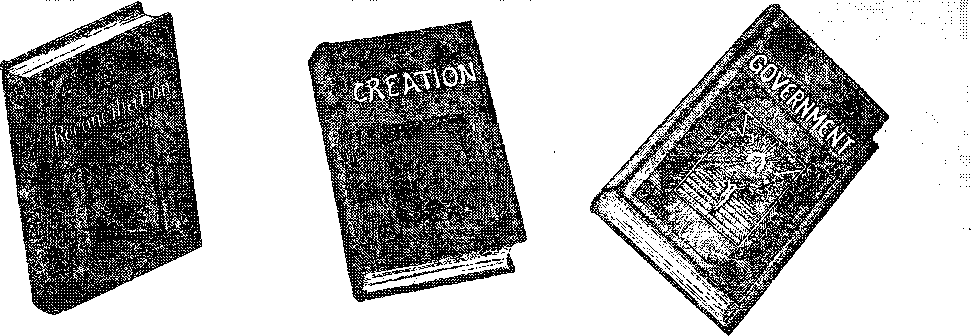

iiiiiiiiiiiiiiiiiiiiiiiiiiiiiiiiiiiiiiiiiiiiiiiiiiiiiiiiiiiiiiiiiiiiiiii
in this issue
• points on the world’s fuel resources
advice to a man who talked too much
Jehovah’s gracious arrangement for man’s reconciliation; lecture broadcast by Judge Rutherford
5c a copy $1.00 a year - Canada & Foreign $1.50
Contents
===—:-----
Labor and Economics The Root Cause os Economic Distress .......... 208
Social and Educational
Thirty Years Hence ................. 207
Co-ops F ait, to Co-op .................. 208
A Good Suggestion fob Radio Fans ............ 209
Fight Not Pulled Off After An. ............ 21-5
Finance—Commerce—Transportation Colorado’s Speed Limit .......... 215
Bus Line Mergers Continue ............... 222
Science and Invention A Few Items on Fuels ................. 193
Home and Health
When I .Stopped Biting Poison . . . . . . . . . . . . . 206
The Cf.lkkkate’) Grape Cube ............... 206
Inspection of Canned Chicken ............. 207
Travel and Miscellany Rapid Development of Canada
The Bkittsii Working Man ............... 200.
Religion and Philosophy
The First Mention of the Logos .......
Ax Open Letter to Reverend De Haan ........... 203
Civilization Weighed tn the Balances .......... 211
Covenant by Sacrifice (Fart 1) ............. 216
The CiinjiBEs's Own IIadio Story ............ 223
Published every other Wednesday at 117 Adams Street. Brooklyn. N. Y., IT. S» A., by WOODWORTH, KNORR & MARTIN
Copartners and Proprietors Address: 117 Adams Street, Brooklyn, Tv. T,f 17. 8. A, CLAYTON J. WOODWORTH.. Editor ROBERT J. MARTIN.. Business Manager NATHAN IT. KNORR. ■ Secretary and Treasurer
Five Cents a Copy—gl.OO A Year Make Remittances to THE GOLDEN AGE Notice to Subscribers: We do not, as a rule, send an acknowledgment of a renewal or a new subscription. A renewal blank (carrying notice of expirallon) is sent, with the jouriw’l one month before the subscription expires. Change of address, when requested, may be expected to appear on address label within one month.
Foreign .Offices
British ....... ", 4 Craven Terrace, London, W. 2, England Canadian ..... 40 Irwin Avenue, Toronto 5, Ontario, Canada Australasian ..... 495 Collins Street, Melbourne, Australia South African ..... 6 Lelie Street, Cape Town, South Africa
Filtered as second class matter at Brooklyn, N. Y.» under the Act of March 3, 1870.
Volume X Brooklyn, N. Y.( Wednesday, December 26e 1928 Number 242
A Few Items on Fuels
IN THE wooded regions of the United States every farmhouse still has its woodshed, though the concrete roads, running here, there, and everywhere, have made trips to the woodlot less necessary than was once the case. Now, two truckloads of coal from town, and the job is done for the season.
It was not such a bad job, getting the wood sawed, split and piled for winter. It gave splendid exercise to the muscles of arms and back, and was calculated to bestow an appetite such as a horse might envy, for the work was all out of doors. And how the wood did melt away in cold weather I
Wood still supplies fifteen percent of the fuel used in the United States. If the cutting is done intelligently, an annual thinning of a forest promotes its productivity, and the quality of the timber is improved. Wood which is unfit for any other purpose can be used for fuel.
Pound for pound one kind of wood is about as good as another for heating purposes. It averages to contain 37.5% of carbon, 30.75% of oxygen, 4.5% of hydrogen, 1.5% of ash, and the balance moisture. It requires two and one-half pounds of wood to equal the fuel value of one pound of coal.
Corn makes a good fuel, better even than wood. It requires two pounds of corn to equal the fuel value of one pound of coal. The western farmer is perfectly justified in raising his own fuel, if he sees fit to do so. Dried peach pits make good fuel, but are not good for starting a fire.
Charcoal is made of wood by evaporating the volatile and non-combustible constituents. One-hundred pounds of wood will yield thirty pounds of charcoal, a fuel of a high calorific value, ranging from 11,000 to 13,500 British thermal units per pound.
Coal the Most Important Fuel
OR general purposes coal is still the chief fuel, and the available heating value of other fuels is always expressed in terms of that of coal. The true anthracite coal, hard, lustrous, smokeless, is almost pure carbon and is an ideal solid fuel. The principal anthracite deposit of the world is in northeastern Pennsylvania.
The bituminous coals are of two principal varieties, dry and caking. The dry contains about 5% more carbon and burns freely without caking. The caking bituminous coals swell and cake when burning and are largely used for making illuminating gas.
Cannel coal is sometimes known as long-flaming bituminous. It has a strong tendency to smoke when burning and has less carbon than other of the bituminous coals. It is found in places in Pennsylvania, Indiana and Missouri® Some cannel coals cake badly.
Lignite, sometimes known as brown coal, is a step further down the scale. It may contain as little as 55% carbon. It is an intermediate substance between peat and coal and contains considerable moisture and mineral matter. The poorer varieties have a low fuel value.
It is estimated that one-third of the total solid fuel resources of the United States are of lignite; and it is well that it is so, because ultimately this vast supply of fuel will be utilized to good advantage. Experts declare that there is enough high-grade motor fuel in American lignite deposits to run all the world’s motors for eight hundred years.
Coke is an artificial fuel obtained from the bituminous coals by driving off their hydrocarbon constituents, by heating. It has a low fuel value under direct firing methods, but it will make a very, hot fire under forced draft
in
The Utilization of Coal
HE chemists tell us that, there is enough energy in a pound of coal to run the whole of the United States for a year, but it is not yet known how to release the electrons which make up the atom. That discovery is quite likely some distance away, but there are immediate benefits from using the coal more wisely than some of us have done in the past.
A few things are matters of general knowledge. The fuel should be selected which requires the least attention in burning. The installation of a thermostat in the average home will pay ' for itself in two years. It is better to live in a fixed temperature of 62° to 65° than 72° to 75° Fahrenheit. There is no need to heat all the rooms of a house all the time. The heating season may be shortened at each end, by considering the uses of a fireplace or of the kitchen stove.
For commercial purposes many coals are improved by washing. Lignites are available for power purposes when converted in gas-producer plants. The efficiency of inferior coals when used in a gas-producer plant is two and one-half times greater than when the coals are fired directly under the steam boiler. Some American coals can be briquetted on a commercial basis.
Pulverized coal is explosive, but is being used for fuel purposes in places where it can be crushed to powder just before it is burned. San Antonio uses pulverized lignite with complete success in a power plant thirty miles from the city. The furnace room is six stories in height and is said to present an awe-inspiring spectacle at night. The heat generated by the powdered fuel is so great that unusual precautions have to be taken to prevent the burning out of the furnace walls.
Chemists claim that by burning raw coal in the United States at least a billion dollars’worth of benzol, tar, ammonia and gas is thrown away, while everything is smeared and grimed needlessly. They prophesy that it will soon be considered a criminal waste to bum raw coal.
Users of anthracite coal find that good results come from using a mixture of “stove” and “pea” coal in the furnace, mixing as used. The largesized stove coal gives body and permanence to the fire, while the pea coal, in a thin layer on the top of it, prevents it from burning out too rapidly.
What the Engineers Sag
SOME of the engineers say that a pound of coal in railway freight service will now move a ton of freight and equipment a mile farther than it would in 1921, and that the railways of the United States are now saving enough fuel every year over what they used in 1921 to heat the city of Chicago for two years.
The engineers say that before long we may have mercury engines instead of steam engines. The mercury vapor is used over and over again. Tests are said to indicate that fuel bills can be cut in half.
The engineers say that it is not impossible that heat waves may be broadcast; and if that time ever comes the whole heating system of the world will be changed in a revolutionary manner. '
The engineers say that large quantities of fuel are saved by superheating steam. In one large power plant th© superheaters paid for themselves in about three and one-half years.
The engineers say that coal can be made smokeless by adding a quantity of ashes to it.. It is found that the inert matter, although unburnt, exerts an important influence on the process of combustion. We have seen this statement denied and are not sure of its truth.
The largest, steam boiler in the world is located in Pittsburgh. It contains six miles of four-inch tubing and has a heating surface of about three-fourths of an acre. At full load it evaporates two hundred tons of water an hour. It is rated at 3,000 horse-power, but is capable of operating continuously at three times this capacity and for short periods at four times this rate.
Oils and Substitutes
THE importance of oil as a fuel is growing constantly. New methods of mixing it with air and water are being discovered. The.perfect way of utilizing it has not yet been found, but the widespread and increasing uses of oil as fuel are so well known that comment is superfluous. . ..
Colloidal fuels are attracting attention. These are mixtures of oil and powdered coal, and it is claimed for the composite fuel that it has all the virtues of ordinary fuel oils, and coals can be used which otherwise would be waste products. Finally, other materials can be combined with oil and fired in the furnaces of boilers that would hardly be considered as fuel under other 'Wcumstanees.
The coming substitute for gasoline is alcohol. It can be made from sawdust, cornstalks, growing crops, weeds or garbage. In short, it is easily produced from any form of vegetable growth containing sugar or fermentable starch and even now can be produced at twenty-one cents a gallon from such relatively costly material as sugar cane or the sugar beet, which may be grown in four months. There is no danger of the world’s ever running short of fuel.
Gm as a Fuel
WHATEVER may be the kind of fuel that is burned, it is the gas that is consumed; hence natural gas, where it is to be had, makes an ideal fuel, though, to the stranger, there is a dampness, a chilliness, in a gas-heated home not noticeable where coal is used.
The tendency of the times is to convert all other kinds of fuel into gaseous form. At the works in Gross Zietcr, Germany, the distillation of sewage produces enough gas for the domestic supply of a population of 8,000. Works of this nature could be profitably extended indefinitely.
The Toronto World estimates that in Western Canada twenty million tons of straw goes to waste every year and that there is enough gas in this to generate seven times the power generated at Niagara Falls on the Canadian side. Besides the gas, tar and ammonia are given off from the distillation of straw, and a valuable carbon residue remains.
Dust of various kinds, when mixed with air, becomes a valuable form of explosive gas. This is true of cornstarch and the dusts of wood, metal, leather, chemicals, cork, rubber, sugar, grain, cocoa and cinnamon. These are only a few of the explosive dusts which may be used as fuel. Fuel from dust reduces the fire hazard and makes use of waste materials.
The gas stove dealers tell us that there are 9,8GO,OOQ: gas stoves in use in the United States, .3,400,000 watim/heaters, 4,400,000 space heaters and several hundred thousand central house-heating systems. Fuel gas does away with smoke and soot, and leaves no ashes for removal. It is predicted that in due time the burning of coal for domestic use will be prohibited, on the ground of its wastefulness, uncleanliness and the ash-removal feature.
Peat as a Fuel
TJEAT consists of decayed roots and foliage J- and must be dried by being stacked in the air before it can be burned direct in a furnace; but it can be readily distilled $nd its .gases used for any purpose for which fuel gas is used, or it can be mixed with oil and will then burn freely.
Peat charcoal, powdered, has been mixed with other coal and used successfully on Swedish railways, the powder being blown into the fire with an air-blast. Both Canada and Ireland have vast peat deposits which -will some day be very valuable. The obstacle in the way of a general use of peat is the expense of drying it.
The claim is made that by a new process peat can be dried and compressed into briquettes all in the space of eight hours. If this is true, and the compressing operation is not too expensive, then the day of the general use of peat has arrived.
This briquetting of cheap fuels, such as peat, sawdust, coal waste, etc., bids fair to become a great industry. It is claimed that sawdust briquettes have three-fifths the value, weight for weight, of good coal. The briquettes are conveniently handled, measured, transported and stored, and they are cleanly and lack smoke and soot.
The Central Heating Plant
THE central heating plant of our little solar system is our sun, from which comes all our heat and power. More than a hundred years ago a steam-engine was driven in Paris with solar heat. The intermediary was a hollow, mirror-lined cone ten feet in diameter, which collected the solar rays and focused them upon a boiler.
A portion of the Nile valley is irrigated by a pumping apparatus operated by solar power, the invention of an American. Solar engines have been used in France and California and elsewhere.
On a siumy day in summer the sun delivers up on each acre of land an energy equal to 2,200 horse-power working continuously all day long. The consideration, of how this power can best be conserved is still engaging the attention of engineers.
The problem is not a problem merely of collecting the power, but of harnessing it, controlling it. Under the powerful concentration now possible the sun's heat may be increased to a higher temperature than exists in the sun itself. This terrific power quickly melts a brick into a liquid and if the melted brick is retained in the solar furnace a moment or two longer it vaporizes into gas. So tremendous is the heat that may be produced that it will even resolve a diamond into gas.
Of course everybody knows how quickly a fire may he started with a magnifying glass. A difficulty of the whole question of use of solar energy lies in the fact that the earth., is in constant rotation, and the whole mechanism must be adjusted to move with it Nevertheless, it may yet be that man will get all his heat and power direct from the sun, and will find ways to store it until needed.
Rapid Development of Canada By Our Canadian Correspondent
CANADA has just harvested a bumper crop, the third in succession. During the year it has opened up mines of fabulous wealth and has spent hundreds of millions in the development of hydro-electric power. All industries appear to be working at top speed with the gratifying condition of little or no unemployment.
Under the caption "Canada’s Century”, The 'Daily Province of Vancouver says editorially:
Is ■ this really Canada’s century ? The Christian Science Monitor asks this question in a recent issue, and by a series of comparisons proceeds to answer it, showing that, measured by certain standards, the Dominion in the twentieth century has. been more than duplicating the progress made by the United States in the corresponding period of the nineteenth.
For example, Canada, entering upon its century with almost exactly the same population as the United States had a hundred years before, accumulated a national wealth of $22,000,000,000 in twenty-five years; whereas it took the United States fifty years to accumulate $7,000,000,000. Allowance must be made for the difference in the purchasing power of money, but even so, the comparison is a favorable one. Also in manufactured products and in agricultural wealth the figures show that by 1850 American manufactures readied one thousand millions, and farm products five thousand millions, annually, as compared with Canada’s three thousand millions and eight thousand millions respectively by 1925. Moreover, the present foreign trade of Canada is as great as was the total foreign trade of the United States in 1900, when that country had a population, of 75,000,000.
Other evidences of growth are mentioned which have a special interest at the moment when we are gathering the greatest grain crop in our history. Land occupied in Canada increased from sixty-three million acres in 1901 to 140 millions in 1921, the last complete census year. In 1901 we grew fifty-five million bushels of wheat. This year wo may harvest ten times that amount. The value of field crops is now between
four and five times what it was twenty-five years ago. During the period mineral production has increased from $65,000,000 to over $240,000,000; capital invested in electric power has increased from eleven millions to 725 millions. . '
'The friendly Monitor points out finally that Canadians are a thrifty people, that the amount of money invested in life insurance is nine times what it was in 1901, and that, savings bank deposits have risen from 298 millions to over 1350 millions in the first quarter of our century.
Government-owned Railroad Forges Ahead
CANADA’S government-owned railway (the largest on the American continent) is rapidly forging ahead and is a testimony to the prosperity of Canada, as are also the receipts of the Canadian Pacific Railway. The Toronto Daily Star contains the following very interesting editorial upon the matter:
' In July the freight traffic was the heaviest on record for that month. The Canadian National’s freight increase over July of 1927 was 18.3 percent, and on its Eastern Lines, which are now financed separately so as to gauge the operation of the Maritime Freight Rates Act, 14.1 percent. The C.P.R.’s increase was 24.9 percent. Passenger traffic on the C.N.R. showed a slight gain; on the Canadian Pacific, a slight loss.
For the seven months ended with July, the railways of Canada increased their gross revenues by over $22,000,000. Of this sum., $11,500,000 is credited to the Canadian National. There has been an increase of $6,500,000 in the operating expenses of the government-owned road, but this leaves it $5,000,000 to the good. Its net revenue from operation during the seven months was $23,500,000. Even when the loss on the Eastern Lines is deducted, the people’s railway may show an operating surplus of $45,000,000 by the year’s end.
This will not meet the full debt charges on the inflated capitalization inherited from private ownership. but it will pay the interest on publicly-held securities. That is what the enemies of public ownership said the road would never do, yet it has now been doing it for three years.
The One-sided Tourist Trade
THE following interesting editorial upon the tourist trade appears in the Toronto Daily Star:
A newspaper in Indiana remarks upon the fact that while the people of Canada and the United States trade with each other to an extent that reaches a vast total in dollars and are in every way on excellent terms with each other, yet Canadians do not visit, by motor or otherwise, across the border to anything like the same extent as the people of the United States do.
There are several reasons for this. One is that at every gateway to the United States there is a suspicion that anybody trying to get in may be a person seeking to evade their quota regulations. Another is that a Canadian who enters the United States finds his money dishonored once he gets anywhere inland —accepted only at an absurd discount or not accepted at all. Naturally, a Canadian resents this and exposes himself to it as little as he can. On this side Uncle Sam’s currency is everywhere accepted at par and our branch banks, which are everywhere, take it in and send it on the first lap of its return journey. If Ontario wants the money of tourists from Indiana and Indiana doesn’t want the money of tourists from Ontario, the present position of things- leaves nothing to complain about.
There is another reason. Canada is to the north and is cool at the season when heat prevails farther south. At that time motoring is at its best and Ontario and Quebec abound in summer resorts. The lure for tourists is incomparable. People do not run away from the cold of winter as they do from the stifling heat of summer, and in the. bleak days motoring is not attractive. And yet a great many Canadians go south every winter—an ever-increasing number of them.
The Canadian Wheat Pool
MORE and more the people of Eastern Canada, as elsewhere, are awakening to the fact that the Canadian Wheat Pool, as operated in Western Canada the last few years, is a decided success. Speaking thereof under the heading "Effect of the Pool on the Morale of the West”, the Mail and Empire in Toronto remarks:
A phase of the Canadian. Wheat Pool which has been little dwelt upon is the effect which it has had on the morale of the West. Prof. C. R. Fay, of the University of Toronto, after a visit to the Prairie Provinces, writes to The Nation and Athenaeum that where in 1923 groups of farmers all over the prairies were talking revolution, debt adjustment or moratorium, now they are talking Pool. State-compelled marketing might have registered equal material success, but its spiritual value would have been slight. This is a voluntary organization of their own creation. Men and women will drive for miles on a winter’s night when the thermometer is 30 or 40 degrees below zero to assist at a meeting by which personally they will benefit nothing. The farmers as a body react to it as a social invention of their own making, forced upon them by their need and too good to part with in these better times.
Prof. Fay compares the Pool to the appearance of a new religion and says that the word can be applied to the atmosphere which is uniting the Canadian West in the new cooperative endeavor. The movement has the faith, the drive and, let it be freely granted, the verbal exaggerations ef a vital religion. It is pool this and pool that. There are coarse grain pools, cattle pools, dairy pools, egg and poultry pools. To old-timers and new arrivals, to English-speaking and to “new” Canadians, the pool is community life on its economic side. Bankers are practical men and they testify to its steadying effect. By its device of periodic payments it has brought the farmer within sight of a cash basis. The wheat grower has a keen interest in price. What irritated him under the old system was the feeling that while he toiled others . speculated with the fruits of his toil. Now he feels that his organization is doing its best for him. He could not possibly know when it was best to sell. This worried the steady man and irritated the venturesome into speculation on the future’s market, where he was nearly always a bull. The Canadian West calls for. venture, and there are certain natural risks, but Prof. Fay believes that the Pool idea promotes stability and lessens the drift toward cities and across the boundary.
Prof. Fay’s article in an English paper of the standing of The Nation and Athenaeum is timely, for indirectly it will tend to counteract any misgivings which may have arisen from, the mischievous stories of a few “Red” harvesters.
Go North, but Not Too Far
NOT so long ago the advice to young men of energy and vision was, “Go West, young man, go West.” Today with the opening of the great North land of Canada the saying is, “Go North, young man, go North.” . Speaking of one corner of the great North country, the Mail and Empire has the following to say:
The Peace River district which has long been famous for its fertility is south of that, great river, but there is a large area which seems to be equally promising to the north of it. For the first time tV blank spaces on this latter part of the map of. Canada have been filled in through an exploratory trip made by Mr. K. F. .McCusker, D.L.S., of the Department of the Interior, in the summer of 1927. He secured permission to accompany a party sent out by one of the most important oil companies in Canada to study the geological formations of this area, and the results of his observations are now published in a Topographical Survey Bulletin.
This new Peace River district lies in British Columbia, to the northwest of the better known one, between longitudes. 122 and 124 and latitudes 56 and 58, and embraces an area of about 10,000 square miles, watered by two large rivers, the Halfway and the Prophet, and many smaller streams. Of course it is intersected by mountains and other non-arable lands, but a characteristic of British Columbia is its narrow valley settlements stretching along rivers with grazing hills beyond. Mr. McCusker estimates that in the area he visited there is room for considerably over 200 sections of open to semi-open land. In the country farther north it was estimated some years ago that there were 350,000 acres of good ranch land. During his trip there was abundant moisture. Frosts were noticed in June and August, but on September 1 the grass and leaves were still green. It was hard to form an estimate of winter conditions, but horses •winter out in many parts. A rancher on Halfway River grows potatoes and garden truck, but has not tried to ripen grain. This is about the only evidence of farming north of the Peace River valley in that area, but another rancher closer to the Peace raises everything that can be raised on the Western prairies. Patches of merchantable timber were found at intervals, and the whole country abounds in fish, and game.
One of the duties assigned to Mr. McCusker was to clear up the rumors of wonderful tropical valleys. He did not find any, but Hudson’s Bay men and some trappers told of warm sulphur springs on rivers flowing into the Liard, and of meadows of excellent hay in the valleys. His party did not reach these sulphur springs, but it is known that horses deserted by Klon-dikers in 1898 lived there until the early twenties of this century. The valleys which he did traverse were very beautiful and their meadows and hillsides, covered with luxuriant grass, appealed strongly to the eye. Altogether, the area resembled the better known Peace River district to the southeast. The C.P.R., having purchased the railways in the latter, will immediately seek to populate it, and it is easy to imagine that before long settlers will cross the river and seek new homes farther north.
The British Working Man
FOB some little while past it has been my privilege to work among the artisan class.
I say “privilege” because it is such to come in intimate contact with some of that great mass of mankind who are due to receive soon a full opportunity to allow them all that the heart can wish for. Has it occurred to you that the majority of earth’s population is made up of the working class? There are some loafers, some parasites, some who live by the sweat of others; but the great bulk are the workers.
It can not be denied that generally speaking they are rough, uncouth, chew’ tobacco and are not particular where they spit the juice; smoke vile, evil-smelling stuff called tobacco, the fumes of which are calculated to choke any one not brought up to it; and as to language-—well, the least said the better. They certainly have a supply of lurid adjectives which they generously intertwine with the subjects of their conversation, in between, before and behind.
No; you will seldom find them at church. “The Missus goes sometimes/” but generally speak-
By One of Them
ing, the workers have no time for the parson or preacher. Their pocket has been picked too often, and the preachers have never been forgiven for their dirty work during the war when the clergy acted as decoy ducks and recruiting agents, and the workers were led by the nose and very badly sold. If any one wishes to escape the great storm about to burst, one way is to be as unlike a preacher as possible—anything but that.
Are there any other noticeable things about the worker? Oh, yes; he does not mind having a “straightback” or lean on his tool at Ids master’s expense if no one is looking; and he does not hurry to finish one job until he sees the prospect of another. Are these faults? Anything dishonest is wrong, of course; but it will need a wise and wonderful Counselor to draw the line between injustice and dishonesty. Let us examine a chapter from the life of a typical working-class family:
Father, mother, and little ones anywhere from two to six years old are quite a usual family. Father, having bee?? unfortunate in his work, has been out day after day trying to find some one to buy his labor so that with the product of his time and energy things may be kept going at home, Mother does a bit of charing and washing to bring in a few coppers. As the days go by the lines on her face deepen; often now she gets too busy about dinner-time to have her dinner. The children have theirs and of course there must be some for Daddy coming home tired.
Each day as the time arrives for Dad’s return the children stop in their play to gather from his face or step, What news? Oh joy! Daddy starts work tomorrow! “It isn’t much, 'mate, but will keep things going.” Silent, thankful tears run down Mothers face; the children find their play goes better, and even the eat notices the change in the atmosphere. Next day Mother is up soon after five o’clock. She must get Dad a cup of tea and get him off in time; put into his basket a piece of bread and some cheap cheese (funds won’t run to anything else and there are too many back calls to think of).
He starts work so thankful that the weary trudge, that ..battling against depression, is over, and determines to give an honest day’s work. He has not been many days at work before a voice beside him says, “’Ere, mate, ain’t yer gettin’ ahead with it! That should last yer all day.” It is not dinner time then, and the job is almost done. He notices the same policy all around. The masters cut off a hit from men here and a bit there, and the men retaliate by doing less, or vice versa; and so the war goes on.
Outside it is just the same. We have had a big war that cost much; unemployed go on the rates, rates and taxes go up in consequence; the profiteers’ appetites get larger, their pockets more capacious, greater profits are required and so one-half penny goes on this and one penny on that; coal gets short, owing to strike of miners fighting for a living wage, and the profiteer steps in, and up goes the price of coal. Mother’s money does not go so far; what is lie to do ? Bill drops into the groove with the others. If he does more than his mates they won’t have him; and that brings back to his mind Mother’s care-lined face, the children and those back calls.
Of what does his life consist? Up very soon after 5 a.m., rabbits or chickens to feed, then off to work. The chief topics of conversation during the day are: the local football team, the coming match, billiards, or some favorite horse upon -which they have visions of getting some “easy money”. He arrives home between 6 and 7 p.m. After tea some snobbing (home cobbling) has to be done. Bobby’s boots need attention, and he can not send them to the cobblers because of prices, leather dearer, etc.
Then perhaps a stroll down the road to the local “pocket snatcher” to have “just one” with old Jim. It is warm and comfortable there, plenty of light and glitter, an electric piano, a gramophone or perhaps a wireless is playing. The “just one” gets to two or three, and then-closing time.
The same routine is followed each day, except that perhaps Mother and the lack of funds keep him from meeting old Jim, although the kind landlord of the “pocket snatcher” will let him put his name on the slate until Saturday. He knows whom to trust. Saturday arrives; and if he does not meet too many old Jims, Bill arrives home about 2 or 3 p.m.
The local football team fills up the afternoon, then there is the visit to the barber to get trimmed up for Sunday. At the barber’s he learns why the favorite team did not win or the favorite horse came in third instead of first, and why it is the bookie has a little more “easy money” collected from Bill and others like him.
He also learns about the political argument arranged for the next morning at the “pocket snatcher”. Then just one or two with old Jim, and to bed. Sunday morning the allotment takes up some time. Must get a bit of vegetables for Mother, and then there is the political argument. Old Jim is going to rub it into the Tories.
This develops, getting hotter and hotter as the glasses are emptied, ever increasing its boundaries and including other subjects and all speaking together. The kind (?) landlord can not take part. He is too busy refilling the glasses. Then comes closing time; the harvest is reaped, and Bill goes home to a late dinner and to bed.
At heart the worker is good, and not black like the profiteer, the political false prophet class. He is generous, ever ready to help, tender-hearted, but easily led. When war was declared in 1914, who responded to the cry of the interested ones, “Your King and country need you’’® The -working men in their thousands, nay, ntiliions, left wives and kiddies to fight the battles of the profiteers, the wire-pullers.
The Devil has effectually blotted out all knowledge of God and His plan, all hope of the kingdom that will give life, liberty and happiness, substituting politics or a great strike, or perhaps a revolution, as the only hope for the future.
But, thank God! the time is at the door for man to be freed from his taskmaster; and under the reign of righteousness now being inaugurated, bad language, rough, uncouth manners, tobacco-chewing, horse -racing, etc., will be left off. The "pocket snatcher” will cease to be, and even old Jim will no longer be a nightmare to Mother and the children, for he too will be seeking life, liberty and happiness under the new government.
If this should catch the eye of a worker, do not turn down that International Bible Student who comes to your door. Listen to what he or she has to say; for this is written by a worker who is, thank God! a Bible Student too.
A LEARNED Hebrew, Moses Steinberg, a friend and admirer of Judge Rutherford and of Pastor Russell during his lifetime, has made the interesting discovery that the Logos is mentioned much earlier in the Bible than any of us hitherto had supposed. We select from his study of the first chapter of Genesis the items that have specially impressed us. Mr. Steinberg says:
Behind the statement, “In the beginning God created the heaven and the earth,” there is something which, so far as I know, has never before been revealed. For centuries that statement has stood its ground in Hebrew and Christian annals as complete in itself and unassailable. But no prophet, rabbi or Christian scholar has ever been able to explain why Genesis 1 refers to the Creator as Elohim-God, while Genesis 2 refers to YHVH-Elohim, or Lord-God.
I go back to the original Hebrew and find that the statement, “In the beginning God created the heaven and the earth,” is not complete in itself. I find that even the English translation, following the Septuagint and the Vulgate, is not correct. And in this discovery and the deductions which may be drawn from it I find new hope for those who still believe that behind the material world there is an originating and directing intelligence.
T <S 3 4 3® J
The key to the discovery lies in the second word, “boro.” The first word means “In the beginning”. The third word means “Elohim”. And “boro”, in between, means “He created”.
The correct translation should be, not “In the beginning God created the heaven and the earth”, but " ‘ In the beginning he created elohim, the heaven and the earth”. I submit that the “He” refers to the Original Source, the Creating Intelligence, and that this “He” created Elohim, or god, as well as the heaven and the earth. This is what the statement must mean, if it is to be accepted as meaning anything at all.
Behind the orthodox conception of the creation as being an act or a series of acts by Elohim or god, there stands the original Creator, whence that Elohim Him-self sprang. That Elohim was the first product of the creation by the Original Source, the Ultimate Creating Intelligence, or whatever one wishes to call that Life which gave life to all, even, to Elohim.
Under this reading of the first verse in Genesis, the heaven and the earth were created second and third after Elohim Himself. And all this makes clear other verses in Genesis which hitherto have been somewhat obscure and in some eases contradictory.
Let us look for a little further light on this discovery that Elohim is not a primary but is a secondary god. We learn from the Pentateuch that Elohim becomes chiefly the mouthpiece of YHVH, or the Word of YHVH. "
Exodus 20:1 reads: “And Elohim spoke all these words, saying, I am YHVH thy God, who brought thee out of the land of Egypt,” etc. At least twice YHVH bestowed the title of Elohim upon Moses, as in Exodus 4:16: “And he [Aaron] shall speak for thee unto the people, and he shall be unto thee as a mouth, and thou shalt be unto him as Elohim”; and in Exodus 7:1: “And YHVH said unto Moses, See, I have made thee an elohim [a god] to Pharaoh”; and again, in Exodus 31: “And YHVH spoke unto Moses, saying, See, I have called by name Bezalel, the son of Uri, the son of Chur, of the tribe of Judah, and I have filled him with the spirit of Elohim, in wisdom, and in understanding, and in knowledge, and in all m Hiner of workmanship” (like the first elohim.), «i artificer working in the predetermined design and pattern of his Creator. More evidence could be summoned to prove that Elohim, like all else, is the creation of YHVH.
v, /'\N SEPTEMBER 25, acting upon infonna-V/ tion received from Mr. J. F. Kersting, of your city, we wrote you a letter of which the following is a copy:
.Rev. Dr. M. E. De Haan, Calvary Reformed Church, Lowell Av, & Fulton St., Grand Rapids, Mich.
Dear Dr. De Haan:
We write for confirmation or correction of the report which has reached us that on Sunday morning, September 2, 1928, broadcasting over station WASH. Grand Rapids, you said in substance to the audience that “when the Bible Students call at your door you should slam the door against their legs, and if you break their legs, I will pay the doctor’s bill. I just hate them. I can not love them”. Also, for confirmation of the report that on a Sunday previous you ■prayed for your friends and enemies that the Lord' should bless them “but not the Bible Students; for they are on the road to hell anyway”.
Thanking you for a prompt reply and enclosing herewith a stamped envelope for' your convenience, we are- ’ ■
' Yours very truly,.
: It is now many weeks since the above letter
was mailed and as we have had no reply, and the matter is one of public interest, and has already received considerable attention in Grand
T Rapids and vicinity, it is right that it should A have the further and wider publicity which we now give it.
We submit to our readers your probable reason for failure to answer our letter, and are content to let them be the judges. This reason we couch in the words of the Master whom you profess to serve:
‘■'And this is the condemnation, that light is come into the world, and men loved darkness rather “than light, because their deeds were evil. For every one that doetli evil hateth the light, neither coinetli to the light, lest his deeds should be reproved. But he that doetli truth cometh to the light, that his deeds may be made manifest, that they are wrought in God. Art thou a master of Israel, and knowust not these things ?” --John 3:19-21, 10.
Perhaps you feel that your advice to the public- to break the legs of Christian men and women wlm love their God and love their fellow men sufficiently to take the truth from door to . door has already received adequate publicity; but not so, and again we quote from the Word of Truth some passages which should serve as a purgative or emetic to your mind.
“Now as Jannes and Jambres withstood Moses, so do these also resist the truth: men of corrupt minds, reprobate concerning the faith. But they shall proceed no further: for their folly shall be manifest unto all men.”—2 Tim. 3:8, 9.
Has it ever occurred to you that it might possibly be true today, as it was in Jesus’ day, that the religious teachers of the hour are not responsive to the message of God because it does not come to them in the way they elect to have it come? Have you ever considered that possibly some of these Christian men and women, whose legs you would gladly break, are the servants of Jehovah Himself? Consider this for just a moment and then reflect on God’s promises to them, not to you, in this hour.
“In righteousness shalt thou be established • thou shalt be far from oppression; for thou shalt not fear: and from terror; for it shall not come near thee. Behold, they shall surely gather together, but not by me: whosoever shall gather together against thee shall fall for thy sake. No weapon that is formed against thee shall prosper; and every tongue that .shall rise against thee in judgment thou shalt condemn. This is the heritage of the servants of Jehovah: and their righteousness is of me, saitli Jehovah.”—Isa. 54:14,15,17.
Do you know, De Haan, that, according to the Scriptures, any man who would encourage his fellow men to break the legs of Christian men and women, because he does not approve their way of preaching the gospel, is a murderer in the sight of God? We give you the scriptures on this point, and, because we feel sure you are not familiar with the fact, we state that in the oldest and most reliable manuscripts the words “without, a cause” are missing from Matthew 5:22, wherein our Lord defines ■who is a murderer.
“Ye have heard that it was said to them of old time, Thou shalt not kill; and whosoever shall kill shall be in danger of the judgment: but I say unto you, That whosoever is angry with his brother shall be in danger of the judgment: and whosoever shall say to his brother, . . . Apostate wretch, shall be in danger of Gehenna fire.”—Matt. 5:21,22.
A a a matter of further information we explain to you that Gehenna has reference to the valley of Hinnom, Ge-Hinnom, the city dump of Jerusalem, where the garbage of the city was burned. We hope. De Haan, that you will not wind up on the garbage pile, but from the present condition of your mind, if you have been correctly reported, that is where you are sure to land. Let us amplify this a little, and again we use the Book:
“For this is the message that ye heard from the beginning, that we should love one another. Not as Cain, who was of that wicked one, and slew his brother. And wherefore slew he him? Because his own works were evil, and his brother’s righteous. Marvel not, my brethren, if the world hate you. We know that we have passed from death unto life, because we love the brethren. He that loveth not his brother abideth in death. Whosoever hateth his brother is a murderer: and ye know that no murderer hath eternal life abiding in him.”—1 John 3:12-15.
We are not apprised in detail of the steps which Cain took to slay his brother, but as no other weapons could be quite so plentiful or handy we think it probable that he first threw a heavy rock at him and broke his legs. -’The reason he did it is set forth in the passage above. Of course, after he had broken his brother’s legs, it was an act of mercy to crush his head with another rock, and we know of no reason why any man who would wish to break his brother’s legs would not also wish to break his neck.
Just a moment now in regard to your alleged public prayer that God would bless your friends and enemies, “but not the Bible Students: for they are on the road to hell anyway.” Dear De Haan, you can not know how it warms our hearts to know that you did not pray for us. It, would terrify us to know that a man with murder in his heart is praying for us. It would be like having the prayers of the Pope on our behalf. It would be sure to bring disaster. We offer a few suggestions on prayer:
“When thou prayest, thou shalt not be as the hypocrites are: for they love to pray standing in the synagogues and in the corners of the streets, that they may be seen of men. Verily I say unto you, They have their reward [gratified vanity]. But thou, when thou prayest, enter into thy closet, and when thou hast shut thy door, pray to thy Father which is in secret.”—-Matt. 6:5, 6.
If you had followed this good rule in your prayer or anti-prayer about the Bible Studefilil nobody would have known anything about it, at least nobody except the Devil and his angels, because it is certain that neither the heavenly Father nor the Son nor any of the holy angels could or did pay the least attention to a “prayer” so foolish as the one you are alleged to have prayed.
We notice that in your advertisement in the local paper you say: “Come and enjoy a good time where the Spirit of God is present in abundance. Come and feed your soul.” Inasmuch as you did not specify what you meant by the Spirit of God, and in view of your other alleged utterances, we are compelled to believe that the god to whom reference is made is “the god of this world”, mentioned by the apostle as the one engaged in blinding the minds of men. Better look this up in 2 Corinthians 4:4.
Under the circumstances we -trill ask to be excused from feeding at such a trough. It may be the popular trough, and we grant that it is, but the diet requires too many condiments to make it palatable. The prophet puts the matter nicely when he says of Babylon’s wine (doctrine) :
“The priest and the prophet have erred through strong drink, they are swallowed up of wine, they are out of the way through strong drink; they err in vision, they stumble in judgment. For all tables are full of vomit and filthiness, so that there is no place clean.”—Isa. 28:7,8.
In conclusion, De Haan, we wonder if you could send us a list of one hundred of your church members who would be willing to slam the doors against the legs of Christian men and women coming to them with the message of the Lord, and in the name and power of the Lord, and with His Word as their shield and buckler. If you think you can do so, send on the list and we will give the whole proposition a try-out.
Inasmuch as you are alleged to have offered to pay the doctor’s bills, we think it possible that we can arrange matters so that you will have something to pay. After that has taken place we can go into the Scriptural phases of this subject more in detail, and you will find it all helpful. It will send cooling, refreshing breezes into your mental infirmary.
Did you ever notice, De Haan, that when our Lord was referring to the scribes and Pharisees and hypocrites of His day He called them fools? (Matt. 23:17,19) And did you ever notice that in the same chapter He seems to imply that they are condemned ones at that?—Matt. 23:33.
And have you ever considered what a wonderful advantage you possess over Balaam? He had to buy separate provender for his, while you are put to only the one expense.
However, you are in greater danger than Balaam, and we will tell you why. Samson will be back shortly, and probably be looking around for weapons to clean up what may be left, and if he ever hears of you he will certainly make a bee-line for Grand Rapids and that will be the end of you. If in your place, we would quit this business now, while the quitting is good, and head for the woods. Once you get started, it is for the public weal that you keep going; go as quickly and as quietly as you can, and go as far as the horizon will permit. It will be a real benefit to the honest.
AMONG people of moderate means bread constitutes two-fifths of the food consumed.
When made of the whole wheat it is a well-balanced food, containing fuel for the production of heat and energy, building material, mineral matter, vitamins and roughage.
Constipation and -white flour are twin brothers. White flour is made white by feeding the most valuable parts of the grain to the stock and whitening up the balance with calcium and ammonium persulphates, peroxide of nitrogen, nitrogen trichloride, benzoyl peroxide, chlorine and electricity. The last named whitening agent is not harmful to the health of users.
Not all brown bread is whole wheat bread. Some of it is not even as good as white bread. Whole wheat bread is harder to bake than white bread., requiring more kneading, hotter ovens and longer baking. Whole wheat bread made by artificial aeration has a much better texture than that made by fermentation. The milling, shipping, storing and baking business is built on a white flour basis. The advertising, the propaganda, are all one-sided and on the wTong side, as usual.
The British show some interest in keeping well. Lord Asquith, Sir Alfred Mond, Sir Arbuthnot Lane and many other noted Britishers are advocates of whole wheat bread, even if it, does cost a trifle more, because they have learned from experience of its benefits.
The following experiments on rats, carried out by Dr. M. J. Rowlands and Dr. Ethel Browning, and published in the Daily Mail, of London, show that whole wheat nourishes and that white bread does not nourish. Experiments on human beings show the same thing. One slice of the whole wheat is worth more than three slices of the white bread in the satisfaction of appetite which it affords.
If you can not get whole wheat flour any other 'way (though it is now often sold in groceries), you can buy a hand mill from one of the mail order houses, buy your owm wheat and grind the flour yourself. It takes some elbow grease, but the results are worth the effort.
Twenty rats of the same breed and the same age were selected. These were divided into two lots, each of five males and five females. Those in Cage A were fed with whole wheat, and those in Cage B with white bread.
On August 2 the occupants of Cage A weighed 840 grammes and those of Cage B 952 grammes. So that there should be no question as to the animals'suffering from a lack of variety of food their diet was varied from week to week. In each cage the diet was varied with the following:
August 2-22.-—Casein, 10 percent; cod liver oil, 2 percent.
August 23-30.—Dried blood, 10 percent; cod liver oil, 2 percent.
August 31 to September 12.—Fishmeal, 10 percent; cod liver oil, 2 percent.
September 12-13.—Cod liver oil, 2 percent.
Each cage was provided with a food hopper identical in size, and Dr. Browning undertook the feeding. At no time were the food hoppers allowed to be empty; they were replenished immediately. While the rats in Cage A never finished their supplies, those in Cage B were always wanting more. The actual weight of food consumed during the experiment by the rats in Cage A was 72 ounces, by those in Cage B 199 ounces, i.e., more than double the amount consumed in Cage A.
All the animals were weighed at stated intervals.
Cage A Cage B
August 2 840 grammes 952 grammes
September 5 1,316 grammes 1,176 grammes
September 15 1,484 grammes 1,211 grammes
It will thus be seen that in the thirty-four days between August 2 and September 5 the rats fed on whole wheat, although they did not eat all the food given them, increased in weight by 476 grammes, while those fed on white bread increased by only 224 grammes, while in the next ten days the “whole wheaters” added another 168 grammes, or nearly five times as much as those fed on white bread.
Further, the “whole wheaters” remained sleek and healthy in appearance, while those fed on white bread showed obvious signs of debility, were listless in movement, lost their hair, and showed every sign of dying. One has, in fact, died, its weight at its death being 63 grammes, or roughly 7 grammes less than its weight at the commencement of the experiment.
As long ago as 1912, Professor Leonard Hill found that rats and mice, when fed on white bread and water, became ill-nourished, infertile and died, w’hile those fed on a bread enriched with the germ of the wheat lived and survived to the third generation.
When I Stopped Eating Poison
I WANT to thank you for the information in 2’fce Golden Age about aluminum poison. I had had severe stomach trouble, dizzy spells and intense vomiting spells for years. Six months ago I decided not to eat anything cooked in aluminum cooking utensils, and after a few weeks’ time I began to see a wonderful change “for the better”; and for many weeks past have had no return of the trouble.
Aluminumware, like many other evils (cigarettes, for instance), is so extensively advertised that people generally seem to be slow’ to give
By Mrs. M. E. Shipler
credit or thought when some publication or radio speaker has the moral courage to warn users of aluminum cooking utensils of the dangers to health from its use.
I have one of Dr. Alsakeris books (Eating for Health and Efficiency) and had quite a good deal of confidence in his teaching until I found he was carrying an ad boosting aluminum, and I thought when I read his magazine: Why teach people what to eat and then advise them to cook their food in poisonous cooking vessels?
SEVERAL years ago a lady came into my office who was suffering with internal cancer. After consultation and diagnosis, the patient agreed to take the treatment, which was largely, but not wholly, a matter of diet. We explained to her that it would be neccessary for her to go on a strictly grape diet for several weeks. Then from that she was gradually permitted to take other vegetarian diet. Seven years have passed and the lady reports this spring that she never felt better in her life.
Another lady came into our Florida office with fibroid tumor estimated at nine or more pounds in weight, but on account of her 'weakened and nervous condition the surgeon declined to undertake the operation (according to information given us by the husband). The woman was almost blind and therefore had to be led from place to place; she was also so deaf that to shout in her ear was the only way we could communicate with her. After many weeks of an absolute grape diet and plenty of manipulative treatment and special baths the tumor was reduced and the sight as well as the hearing were steadily improving, so that the lady could do her owTn seeing and hearing.
We have had several come to our Florida office suffering from the loathsome disease, cancer, who have been reclaimed that they might continue their citizenship here for a few more years, and thereby increase the joy of their loved ones.
In a manner similar to the above we have treated as many as four cases of tuberculosis of the lungs in one family with altogether satisfactory results.
We recognize the grape (in its natural state) as the greatest normalizer of human tissue on earth, if taken absolutely alone; but the action of the chemicals of the grape when contacting with other food elements in the human laboratory (the stomach) are almost sure to produce a by-product which is a veritable poison.
On. account of the mineral elements of the . dark-skinned grape, we usually prefer some of the dark-skinned varieties. For similar reasons we prefer the red-skinned onion when dieting to dissolve gall-stones.
Recently a lady who had been battling for years against the deadly, flesh-consuming monster was made to greatly rejoice while in South Africa because of discovering the fact that cancer could be cured, or removed, and the system wonderfully cleansed by the grape diet. This good woman came for over 11,000 miles that she might give this wonderful message to a sick and dying world, and that without price. Very enthusiastic reports have come in through public agencies of the wonderful work that has been done by others who have followed the instruction of the lady who returned from South Atnca. But alas! like the Great Physician, they were not orthodox; therefore the great and generous work (for which no set fees were charged) had to be abandoned, even though administered by duly licensed practitioners, until such time as the "regular” physician might see fit to give it in his “regular” practice, for it is construed that such a base act as the administration of fresh grapes is a violation of the law.
The good woman from South Africa should rejoice that she found and secured the cure before coming to the home of the free.
A LFRED W. McCanx tells us in The Mirror
(New York) that for twenty-two years the law requiring the inspection of poultry was ignored by officers of the Government until they suddenly pounced upon the Silz Packing Company, possibly at the instance of some of its competitors, and published their findings.' far and wide. The Silz Company thereupon countered and demanded constant inspection of all poultry passing through its place. The Government was embarassed. It had no funds with which to pay for such inspection, and this in. a period unrivaled in history for Teapot Dome .statesmanship. The Silz Company gained its point, however, by paying the inspector’s salary itself and thus became, after twenty-two years, the first Government-inspected poultry packing establishment in America. That is one way to get inspection, anyway; so all are thankful. Incidentally, the raid and the aftermath shows that much of the poultry sold in America, canned and uncanned, is tuberculous, tumored or otherwise unfit. In places in the United States sixty percent of the chickens are sick and unfit for human food. McCann claims that there are only seven restaurants in the United States that serve chickens known to be free from disease.
Thirty Years Hence By Paul Morand (France) [From the Paris Journal Candide]
IN THIRTY years’ time the United States will rule the waves and Europe will have dropped to second or third rank; practically all of South America will be under Washington’s control; women will wear trousers; love will have disappeared; it will be extremely difficult to tell men and women apart. They will dress alike and affect the same coiffure. In workshops, 'offices, government bureaus and airplane activity women will be the equals of men in every phase of human achievement. Many wTomen will drop feminine names and be known as Charles, Frank, John, etc., in order to wipe out every single distinction.
It will be impossible in a quarter of a century for a pedestrian to 'walk the streets of New York, Paris or Berlin. Several cities will have to build elevated platforms to accommodate the streams of traffic going in opposite directions.
New Yorkers will attend the theatre in Paris at nights and will be back in their offices the next morning on time to start the daily business routine. Luxuriously fitted airships will be hotels that go whirling through space at 1,000 miles per hour. Not a corner of the earth will remain unexplored.
Power from Niagara and the great waterfalls of Africa, the Zambesi and Victoria, will be supplied by wireless to industries all over the world. Television will have become an accomplished fact and when telephoning from America to Europe the faces of the conversant s will be as clear on a small screen immediately above the mouthpiece as if they were speaking to each other seated in the same office.
The dollar will have become the universal monetary standard. The United States will have reached the peak of its power and prosperity in 1958, and this period will last for more than 100 years. It will be the Golden Age, the most glorious era that the world has ever known.
THE root cause of the farmers’ difficulties which J. L. Kunkle notes in “Why Farmers Find It Hard” (your September 19 issue) is that the unit of the money in which the prices are fixed does not represent a definite duration of adult human work. For that reason the use of our present money puts a price on what is not human work, thus forcing some persons to work longer for others than those others work in return. And as long as such a monetary unit is used some workers, at least, whether they be farmers or not, must work at least partially as slaves, for the essence of slavery is to have to work for another longer than that other works in return.
It is not that large operating concerns can do things more cheaply than small ones (there is such a thing as being too large), but that such concerns now enable a few to control the finances and force more persons to work for them without.their having to work in return. In short, the enormous concerns we have today are due to the use of an inequitable monetary unit at a time when invention makes it possible to get large results with little work.
To conduct human affairs “on principles of equity” we must conduct them, on the basis of equal freedom between sane adult human beings. And that can not exist except where those adults exchange their work equitably. To do that they must have a definite unit of the duration of their work by which to equate all varieties of it. And their monetary unit must represent that unit of work, and nothing else.
IN KENTUCKY and in the northern part of Tennessee the tobacco growers are suffering as the result of their cooperative association’s failing to pay, except the small amount that was paid 'when the crop is brought in, for several crops of tobacco. Thus the farmers have found it hard to get by.'
They were required under their contract to deliver all their crops to the association, receiving at the time only a very small pereep ; of the value of the crop, the rest to be paid when the crop was sold and the association expenses deducted. The association heads receive very large salaries. The officials have held the crops for several years, selling about enough from time to time to pay their expenses, salaries, etc., while they let the farmers suffer.
In Georgia the cotton farmer is the victim of
By Grover C. Powell
price juggling and the boll-weevil pest. In many towns and villages in Greene, Oconee and Oglethorpe counties, where a few years ago there was business and prosperity, today there is the reverse. The heads of many of the oldest business houses don’t have a dime that they can call their own.
On the eve of the presidential election, one might think that there would be much enthusiasm and many hopes expressed that their party would bring the remedy; but not so. Such hopes, as a rule, are so faint, if there happen to be any, that they are not expressed. Many are the expressions that they entertain no such hopes. A look of hope warms up many of their faces when they think that possibly God’s kingdom on earth will bring the remedy.
[We are in receipt of ri:e following letter, with enclosure, from the Radio and Lecture I>pariment of the Watch Tower Bible & Tract Society. We are sure that most; of our readers will enjoy the letter and Lc g;ac; to profit by the v.i-.-e and timely suggestions.— Ed.l
HHHE question of how best to encourage those radio stations which broadcast ‘WATCHTOWER programs is an important one- io Bible Students. Individual letters which are poorly written, expressed in poor grammar, not properly punctuated, and written on cheap paper, and in many instances barely readable, are at least of doubtful value, if not positively injurious.
The accompanying letter from W. K. Jackson, who is the WATCHTOWER program manager at Galveston, Texas, to the proprietors of Station KFUL, of that city, we believe offers a far better method of encouragement, because it furnishes the station with some information that is of real value to them.
Mr. Jackson attended a local service convention at Houston, Tex. The assembled delegates were asked to report on the reception of the lectures in territory where they had canvassed. These reports were taken down and Mr. Jackson wrote the station, giving them the facts.
We suggest that all canvassers mention the WATCHTOWER programs and the nearest station broadcasting the same, and ask about the reception, make a note of the same and report the results at the one- and two-day service conventions that are now being held all over the country. Some one should be asked to take down these reports and formulate a well-written, typed letter, patterned after the Jackson letter, herewith appended, which should be sent to the proprietors of the station.
The letter should state the following facts: (1) that a convention of Bible Students was held, giving the name of the city; (2) that reports on reception of WATCHTOWER programs from this particular station were requested; (3) the cities and towns which report good reception should be mentioned, together with any items of interest; (4) mention the fact that the delegates are engaged in calling on the people in their homes and offering them Bible study helps and alwavs introduce themselves bv identifying their work with the WATCHTOWER programs; (5) conclude your letter with an expression of thanks for the cooperation of the ^station in making our programs a success.
The advantages of such a letter are quite evident. (1) It will be well written and readable;
(2) one letter reports ou conditions covering a largo area; (3) it advertises and popularizes WATCHTOWER programs; (4) it impresses the station proprietors with the fact that Bible Students are boosting, their stations; (5) the proprietors will have some concrete evidence that their- programs are reaching the people, and that the people are listening in to WATCHTOWER programs.
October 1, 1928 Mr. A. IL Johnson, Director, Station KFUL, Galveston, Texas.
Dear Mr. Johnson:
I attended a convention of the International Bible Students Association at Houston, September 29-30. One of the subjects which was discussed and reported on was the radio.
-Favorable reports were received from, scattered parts over the state (including Dallas, San Marcos, Beaumont and others) in regard to the WATCHTOWER programs being given over radio station KFUL weekly.
From Teague, Texas, a little over 200 miles by rail from Galveston, comes the report that the WATCHTOWER programs are heard from radio stations all over the country, including the one owned by our Association at Chicago, a 5000-watt station, but that the Sunday morning WATCHTOWER program from the community broadcasting station at Galveston, Texas, is the best.
From Palestine, Texas, about the same distance as Teague, it was reported that the KFUL Sunday morning programs are heard each week by a great many residents at that place.
From towns scattered throughout the state of Louisiana, the reports show that Galveston WATCHTOWER programs are heard by a great majority of the people. This is true of the rural districts especially, where they enjoy having this kind of program on Sundays. The WATCHTOWER programs given by station KPRC on Monday nights are not nearly so well received, because people listen to other kinds of programs on week-nights. •
From. Beaumont. Port Arthur, and vicinity, reports indicate an. intense interest in the radio programs of the I. B. S. A., and especially those given by station KFUL.
From Palacios and other coast towns, the Sunday morning programs from your station are very well received. Stations from other places are not as clearly received there as your station.
209
Taken as a whole, the report was very favorable, I believe. The people not- only seem to enjoy the character of programs we are broadcasting, but like to have them on Sundays.
Yesterday being the first time I was absent from the station since we have been putting on programs, I was anxious to know how the program came out. I didn’t get the opportunity to listen in, due to the convention’s being in session at that time; but from a friend of mine in Houston I learned that the program was a success from every standpoint. In this connection, I do not want to omit stating that the programs arc being heard regularly at. Houston.
The delegates to the convention were able to give a very reliable report on the subject of reception of the radio for the reason that most of them are engaged in calling upon the people at their homes, offering Bible study helps to them. They invariably introduce themselves by identifying their work with the WATCHTOWER. Almost every time, before they have an opportunity to say more, they are advised by the lady or gentleman that they have been hearing the WATCHTOWER programs from radio station KFUL at Galveston and are enjoying them immensely. . This report is given you so that you may see that results are showing up. People do not take the time to write in or call in to the radio stations now as they did when radio was younger. Even though they hear the station and appreciate the programs, they never say anything about it. We find, though, in calling upon the people, that in very few instances where they have radios are they ignorant of station KFUL or of the WATCHTOWER programs being broadcast through the courtesy of your station.
I want to take this opportunity of thanking you for your splendid cooperation in helping us to make our programs successes. Your help will not. go unrewarded, I am sure. The message that we are giving during our programs is one of-glory to God, a message of comfort to the people. ,, -
■ Yours very truly, .
W. IC Jackson, Local Manager.
A BRANCH of the Anglo-Israelites are now advertising that they have the water of life, and that, by drinking it exactly as ordered, all persons may get well of whatever diseases they have. They also claim that by carrying a little of the water in an air-craft or a ship it affords complete protection to all in it! A soldier who carries it on his person is also safe!
The way you get the water of life is by sending to headquarters and getting a piece of linen about an inch square. You put the linen in a bottle and fill up the bottle with pure -water. That is all there is to it. After that you can, not only get well, but notice all the other things that will come to you by using a “section” of linen in the way indicated: ■
Protection for your home and in case of warfare. Once only, and on a day soon after receiving this, sprinkle a wineglassful of Water B outside each of your street doors and gates, back and front and side. Lodgers and those living in flats can sprinkle the water outside their rooms. Say Psalm 91 on the same day and as soon as possible after performing the act.
Food-shortage in famine or war-fare. Should foodshortage loom in sight, a teaspoonful of Water A for each person, added to the liquid food of the family, will make up for deficiencies. In actual famine, a wineglassful of Water A at each meal wall support all persons taking it, according to the Divine Promise, “their bread shall be given them and their water shall be sure. ’ ’ The Bread is this Promise, therefore guard this paper carefully and you will always be able to obtain the water to use, as you are told.
Protection and healing for animals (cattle, horses, dogs, cats, fowls, birds, etc.). Put a teaspoonful of Water B in their drinking water (or milk) daily. For large numbers of cattle, put a pint of Water B 'weekly into the streams or pools from, which they drink. In disease, give the animals extra water, and apply outwardly for sprains, sores, etc.
Help in financial affairs. Ask for a special Section and put it in the lining of your purse, note-ease or pocketbook, saying, “Purposing to be true and.just in all my dealings, I ask for the Blessing of the Divine Spirit upon my money affairs.” At the same time, you can sprinkle your Pass-book, Savings-Bank Book, Cash Box or Till with Water A, saying the same words. You may also sprinkle letters on serious business or monetary affairs, before posting them. If you have a difficult or important interview, have with you a clean handkerchief, sprinkled with. WaterA, but always be sure you are well-intentioned and are embarking upon a just and righteous scheme.
Traveling. For protection when traveling, carry-on the person a half-inch, square as in No. 4 above.
Britain is the New Jerusalem! The Union. Jack really means the Union of Jacob! Honest! “If you have given up going to church, begin again; use any church!” The twenty-four bishops of the Church of England are the twenty-four elders of Revelation 4 and 11! How the demons must laugh at it all!
[Radiocast from statior; WBBR, New York, by E. L. Beaulieu.]
THE virtues and benefits of modern civilization are so many that one can not recount them all. When we compare the comfort, conveniences and enlightenment of the present age with the conditions of the past, the contrast is so great we can hardly imagine how people endured the days of old. Yet the differences between the present, and the past are largely superficial; and when we come to analyze man himself, we find him pretty much as he has always been since the very beginnings of history.
The boasted twentieth-century civilization has indeed provided greater creature comforts and increased the learning of the multitude, but its advantages have been in externals. Men have more knowledge, but neither greater capacity to think nor more wisdom. Men have more wealth and increased means of every sort with which to accomplish their wills and satisfy their desires. But men have not learned how to equitably divide their wealth, and the extremes of fabulous riches and dire poverty continue to exist side by side.
In theory the world has subscribed to the brotherhood of man and placed its ability to serve others as its highest ideal. Yet it continues in general to serve others only when it pays well to do so, and still fights its brother man by every means known to science and intrigue. Individuals compete against one another as individuals, social classes strive against each other as classes, and as nations the world wars with, guns, battleships, poison gas, diplomacy and peace treaties; and the last are not the least important of the means by which the nations secure their selfish ends.
In a word, the present civilization, like those which preceded it, is based upon selfishness. Men and nations talk about brotherly love and do everything but exemplify it.
Further, in this day of knowledge and invention men have wrested from nature many of her secrets. Many inventions have been sought out, many things have been devised to save labor and increase wealth. And the world has given itself the credit.
Increased learning has not caused men to reverence the God of nature, nor to recognize that all present knowledge and conveniences have come through His design because God has at this day permitted mankind to discover some of His eternal principles and laws of operation. Instead of its being an age of revived faith, this is the most faithless. Material things it has in abundance, but spiritual things are often conspicuous by their absence.
As we thus contemplate the present civilization, and begin to realize its serious shortcomings, and further see its insecure foundation of selfishness, we can recognize that it too, like its predecessors, must fall. In fact, it is already falling. It is not only doomed, but actually on the down grade. The very peak was reached in 1914, when its prospects were brightest. Those prospects were destroyed for ever in that colossal orgy of selfishness and hatred, the World War.
Present efforts of statesmen, financiers and the religious leaders-of the people are directed to bolstering up the old order; but it is a hopeless task. The only hope of the race is a new civilization to take' its place, a new civilization on a different foundation. The old has been weighed in God’s balances of truth, and justice, and is condemned. He will replace it by the kingdom of His Son, a new world in which, will dwell righteousness.
The judgment of God against the present order appears to have been prefigured in some degree by His judgment upon the ancient city of Sodom. This city was destroyed, together with all its inhabitants, for things which God considered crimes. “Behold, this was the iniquity of . . . Sodom, pride, fulness of bread, and abundance of idleness was in her.” That doesn’t seem so bad, having plenty to eat and much leisure time. One would suppose she had reason to be proud of her accomplishments.
But let us read further: “Neither did she strengthen the hand of the poor and the needy.” Ah, here we are getting at the matter. Sodom had abundance of food, but the poor starved, and the needy were at leisure because they could find no work. Unemployment problems evidently are not modern at all! Selfishness worked the same way and brought about the same results in Sodom four thousand years ago as today.
“And they were haughty, and committed abomination before me: therefore I [Jehovah God] took them away as I saw good.” The indictment is here completed. The pride of Sodom was haughtiness; and instead o£ worshiping God and desiring to do His will, they committed all manner of transgression and violated His laws. Therefore He took them away and destroyed their civilization.
Now the Sodomites were heathen, and yet their punishment was just, oven though they were not completely instructed by divine revelation. An appreciation of the difference between right and wrong exists in all mankind, because God placed this appreciation in man in the beginning. How much greater is the responsibility of the people of today than the Sodomites’; for the revelation of God, as gi ven in the Bible, is widespread, and but few can claim ignorance of Jehovah’s laws.
Indeed the civilization of today is supposed to be Christian and based on love. Therefore the civilization of today is doubly condemned, because not only is it dearly selfish, but it claims to be unselfish. Today people follow the Prince of Peace to war! What an anomaly! And the unemployed, brethren whom the rest of the world should love, may use their leisure in starving to death, or they may- accept the dole of charity.
When we examine the situation in the world today, the similarity between the present civilization and that of Sodom is striking. Like the Babylonians, the Persians, the Greeks, the Bomans, and even the French before the French Revolution, there is widespread today almost unlimited pride in our material progress. Treasures of gold and of silver are heaped up beyond the dreams of the ancients.
Through modern inventions natural forces have been conquered and harnessed to do the world’s work. An unprecedented increase of knowledge has multiplied all sorts of benefits. Common schools are provided for all, higher education for many; and the accumulation of scientific knowledge has revolutionized the world.
Mankind travels through the air, over land, and on and in the water at rates of speed vrhich were formerly unthought of, and with a convenience truly marvelous. For we are living in the great day of “the time of the end” of which Daniel spoke, “the time of the end [in which] many shall run to and fro, and knowledge shall be increased.” Only last year an intrepid young man flew alone from New York to Paris, without a single stop or a mishap; and now others
emulate his example. The world is proud of these feats. .....
The speaker, in preparing his notes for this present discussion, did so aboard a train, while seated in a Pullman ear, lighted with electric lights, traveling at some forty to fifty miles an hour. He did not write with quite the same ease that he would in his own home, but in a sufficiently legible manner nevertheless. This lecture is being delivered through the air by means of the radio, a thing absolutely incomprehensible a century ago. Again mankind is proud of its achievements.
Formerly the world was held in bondage by superstition and erroneous ideas on all subjects. Today man is getting away and beginning to think. Again he is proud of his progress. At one time nearly the vdiole world w-as heathen ; now more or less information with regard to the Bible is widespread. Again people are proud.
Although much missionary endeavor is a failure, and even so-called Christians fail to live up to the principles of Christ, yet many have been proud of what has been accomplished, failing to see that knowledge does not constitute faith, and that indifference is worse than ignorance.
Truly as Sodom was, the world today is proud. It has reason to be proud of its attainments, but it fails to give proper credit to God, and claims all modern benefits to be the result solely of man’s thinking and his efforts to benefit himself. How blind is man when he can not see that the most he is doing is to discover God’s laws and to use the forces of nature, which God created, to benefit himself.
And “fulness of bread”. In some parts of the earth we have had famines and people have starved to death, but not because of a world scarcity. The world as a whole continues to raise more than it can eat, and the problem is not one of production but of distribution. Peo-pie in China or Russia or India may starve, while farmers in our own country can not pay their debts because they can not sell their wheat and corn for enough to pay the cost of production. In general, however, the world has more to eat than ever before. Modern transportation today provides our northern market even in midwinter with summer vegetables and tropical fruits. In New York city the housewife serves lettuce from California,' oranges from
Florida, pineapple from Mexico or the West Indies, coffee from Brazil, tea from Japan, figs from Smyrna, olives from Italy, and who knows what else from the distant lands. Yes, we have enough to eat, and more than enough.
Furthermore, we manufacture more than we can wear or use. Manufactured articles are now produced in such profusion that markets can not be found because too much is made. Oft-times the world is faced with hard times because no market can be found for the goods already made, and the workman is out of work and can buy neither food nor manufactured articles because he has produced more than the world can use. What a situation I
One result, then, is abundance of idleness. Not only the rich, but the poor also have leisure nowadays. No longer is the twelve- and fourteen-hour day common, but gradually the eight-hour day has been introduced. Slavery without pay is no longer possible; and while the term “economic slavery” is sometimes used, it refers merely to the fact that man must work or he can not eat. Unemployment is feared today more than overwork.
Formerly men were worked to death; now they must work to live. For today, as in the past, “neither do they strengthen the hand of the poor and needy.” Many times thousands are forced to accept public charity, through no fault of their own, but as the result of an iniquitous system and civilization. The whole system cries out for change. Yet it is not changed. And it is therefore condemned by God.
Haughtiness persists today as it did in Sodom. Social classes continue even in this country of democracy. In Europe there is an autocracy of birth; here, an autocracy of wealth. Which is the worse?
“And committed abominations before me,” before God. There are various kinds of abominations, but in all the world there is no other abomination like hypocrisy. Nothing that the heathen and ignorant can do is as bad in God’s sight as stating with the lips that one is serving Him, and actually serving some one else. Sodom was wicked, and God destroyed her. But He declared His people Israel were averse; for they sinned and yet claimed to worship Him. “As I live, saith the Lord God, Sodom thy sister hath not done, she nor her daughters, as thou hast done, thou and thy daughters.”—Ezek. 16:48.
In like manner the civilization of today is outwardly Christian, but actually anything but Christian. Hatred and strife still continue, and preparations for war take the place of love for God and man. The money-changers arc in the temple today as in Jesus’ day, and modern scribes and Pharisees draw nigh to God with their lips while their hearts are far from Him. Beautiful temples of worship are erected, and in them the name of God is blasphemed.
On the one hand the God of love is represented as being a three-headed God desirous of torturing in a hell of fire and brimstone any of His children who are rebellious, in spite of the fact that God says such a thing never came into His heart or mind. (Jer. 7:31) On the other hand God is represented as being* an impersonal force, a God of evolution, indeed powerful, but not greater than His creation, which is really Himself. Both views are equally erroneous and unscriptural, and equally blasphemous.
The truth that God has permitted evil for the purpose of teaching man the lesson of sin and will provide for the teaching of the lesson of righteousness also, and give all an opportunity to be saved is not mentioned. As Amos prophesied, there is “a famine in the land; not a famine of bread, nor a thirst for ■water, but of hearing the words of the Lord”. (Amos 8:11) This is the most serious defect of the present civilization, that it has forgotten God, the true God.
Evolution has been enthroned in place of the divine Creator. The Bedeemer of the race has been supplanted by the boot-strap method of obtaining salvation through self-improvement and charitable works. Neither God nor the Savior is necessary to the self-sufficient modern. “The wicked, through the pride of his countenance, will not seek after God: God is not in all his thoughts.”-—Ps. 10:4.
Although mankind has largely forgotten God and is drifting steadily away from Him into total unbelief and infidelity, God has not forgotten mankind. He created man and placed him upon the earth in order that he might enjoy the blessings of earth and live here for ever. Mankind must pay a price for this, however, and that price is recognition of his Creator and conformity to His laws. God is not selfish in requiring this.
On the contrary, the fact that He has'faade known the requirements and is to give man every opportunity to come up to them is proof
that God is unselfish and really desires to bless 'man. Ue wants to show forth His love to man, and He will do so. Man’s failure to recognize Jehovah and His laws has brought the penalty of death; not. because God desired it, but because it could not be otherwise.
However, “God so loved the world, that he gave his only begotten Son, that whosoever be-lieveth in him should not perish, but have everlasting life.” (John 3:16) This fact will one day be testified, and all shall come to an accurate knowledge of the truth.and receive an opportunity for salvation. This opportunity can not be given under present conditions when God is not known, but will be given when His civilization of truth and righteousness, His kingdom' for which we have prayed for nearly two thousand years, is established upon the earth and, as a result, His will done here.
Jehovah took Sodom away. With more reason He will destroy the present civilization. Our civilization is really collapsing of its own weight, and the time is nearly at hand when the people of the earth will refuse to conform longer to the code of selfishness of the present world.
Tn the same “time of the end” in which Daniel says “many shall run to and fro and knowledge shall be increased”, God has set His King upon His throne to vindicate His name. When Israel came up out of Egypt, God, by His deliverance of Israel, made for Himself a name, and became famous even in Egypt and in the tribes round about He is about to. deliver the people of earth from the present civilization, and will again make for Himself a name in the earth.
God lias not ceased to love the race, nor has inanded ■ to make Him known. ■''
nesses, saith the Hord, that I am:Go<Wj||iy.. 43:12) The witnesses of Jehovah are that a new civilization is to be ■ established God Himself.
The new civilization, to be la,sting, must be based on better principles than the old, the principles of love, which Jesus, the Prince of Peace, enunciated. God, speaking to His chosen people, the Jews, said: “A new heart also will I give you, and a new spirit will I put within you: ' and I will take away the stony heart out of your flesh, and I will give you an heart of flesh. And I will put my spirit within you, and cause you to walk in 'my statutes,, and ye shall keep mv judgments and do them.”—Ezek. ‘-36: 26,27. / ‘ '
God's favors are not only to the Jew, but also to the Gentile; and ultimately “all the ends of the earth shall see the salvation of our God”. (Isa. 52:10) Then will be the time spoken of by the Apostle Peter, who said that the present heavens and earth, the present order or civilization, will pass away. “Nevertheless we, according to his promise, look for new heavens and a new earth, wherein dwelleth righteousness;” —2 Pet. 3:13.
In other words, we are expecting a new civilization based on righteousness and brotherly love. This can come about only by Jehovah God’s giving mankind His spirit and mankind's i: recognizing and worshiping his Creator. ■ That will be the day of everlasting peace, wThen “nation shall not lift up sword against nation^ neither shall they learn war anv more”.—Isa. 2:4.
UESTION: Will all wicked people, like Judas, who renounce the goodness of God after receiving His favor, die the second death! Does the second death mean that such individuals will be dead for ever!
Answer; Yes; that is the correct thought. In Psalm 145:. 20 we read, “All the wicked will he [God] destroy.” In Psalm 37:10 we read, “Tei a little while, and the wicked shall not be; yea, thou shait diligently consider his place, and it shall not be.” In 2 Thessalonians 1:8, 9 we read that those who “obey not the gospel of our Lord Jesus Christ ... shall be punished, with everlasting destruction from the presence of the Lord, and from the glory of his power.” Speaking concerning those who are willingly blinded by the doctrines of error, the Lord says that they will sleep for ever without an awakening. In Jeremiah 51:39 we read that they “shall sleep a perpetual sleep, and not wake, saith the Lord”.
Question; Kindly explain how the temptations were carried out by the Devil when he took Jesus “into an exceeding high mountaiip and
QOWEN AGE
sheweth him all the kingdoms of the world, and the glory of them; and saith. unto him, All these things will I give thee, if thou wilt fall down and worship me.” Was Jesus actually taken up into the mountain by the Devil? or were these thoughts suggested by the Devil?
' Answer: It seems reasonable to believe that the temptations were strong suggestions by the Devil to the mind of Jesus. The Bible speaks about the battle which the Christian has against the adversary, and this battle is truly fought in the mind. In Ephesians 6:12 we read, “For we wrestle not against flesh and blood, hut against principalities, against powers, against the rulers of the darkness of this world, against spiritual wickedness in high places.” We will note that when Jesus was tempted by the Devil, the Master did not compromise. Even though offered the dominion over all nations, Jesus was loyal to Jehovah God, His Father. Jesus said, “Thou shalt worship the Lord thy God, and him only shalt thou serve.” The Christian today is to be always on the Lord’s side, and always against the Devil. Jesus also said, as stated in Matthew 7:21, “Not every one that saith unto me, Lord, Lord, shall enter into the kingdom of heaven; but he that doeth the will of my Father which is in heaven.”
Question: Are the books that are called the Apocrypha a part of the inspired writings of God?
Answer: No. These books are merely historical. There is a difference between these writings and those found in the Bible. The genuine books of the Bible are quoted from in various places in the Bible and are referred to in many instances by the Master and the Apostles. Furthermore, there is no necessary information in these books that a Christian should have, while there is in the genuine books of the Bible.
Question: Will the death of animals ever cease ?
Answer: The Scriptures say that the brute beasts are created to perish (2 Peter 2:12), and we understand, therefore, that death will always be their portion. How grateful it will make us feel to realize that God counts us His sons and puts us on a higher plane where the unspeakable blessing of everlasting life may be our portion!
IN COLORADO, along the national highway between La Junta (pronounced La Hunta) and Pueblo, there are road signs at intervals which read, “Warning: Speed limit 65 miles.” Who would be likely to exceed that speed or want to? But the very fact of the presence of those signs impresses me that not all fools are dead yet and that some have no desire to perpetuate their existence, their car or the lives of others. Who can “kick” on Colorado’s speed limit? The slow driver and the over-cautious and the fearful of consequences.
I KNOW your desire is to print nothing but, what you believe to be the exact truth on all subjects. In The Golden Age, Number 234, page 796, concerning “Dempsey Saves Church”, I have learned the fight was not staged. Your information was no doubt received through reading an advertisement of the fight.
A certain reliable member of that church has stated these facts to me: The Rev. Dr. Dyer did ask Jack Dempsey to stage the fight to help the church, and the fight w*as advertised, but later other members of the church who opposed the fight persuaded Dempsey to call the fight off.
Even though the fight was called off the “god of this world” is seeing to it that the Wilshire Boulevard Congregational church is still prominently before the minds of the people of Los Angeles. The Rev. Dr. Dyer was asked to resign some time ago and he has refused to do so. Contrary to 1 Corinthians 6:1, they have been airing their troubles in the civil courts of Los Angeles for some months.
[Brofidcftst from Station WBBR, New York, by Judge Rutherford.]
IN THIS lecture consideration will he given to the covenant by sacrifice. God through His prophet says: “Gather my saints together unto me: those that have made a covenant with me by sacrifice.”—Ps. 50:5.
The covenant by sacrifice has been wofully misunderstood by many who have honestly and sincerely desired to serve God. Why have they misunderstood? The answer is, Because Satan, who is the god of this world, has blinded the minds of men to the truth, lest the glorious good news concerning the relationship of Jesus Christ to God and to the salvation of mankind might be known to the people.-—2 Cor. 4: 3,4.
The shedding of blood is repulsive because death is a great enemy. Satan knows that; therefore he has caused many to believe that Jehovah God is such a great and monstrous fiend and so blood-thirsty that He demands sacrifice in order to appease His wrath. Nothing is farther from the truth than that. God is just, wise and loving. He requires nothing to appease His ill-feeling. He has graciously arranged for the complete meeting of the demands of justice and has lovingly provided that those knowing the way of His provision, and being obedient thereto, shall have life everlasting.
What is the church? has also been much misunderstood. In the mind of most people it is thought that the. church is merely an organization of men and that all that is required to become a member of the church is to answer a few questions, have one’s name written upon a book, and then keep up his part of the expenses. Such a course has no reference whatsoever to the church of God, the names of w-hich are written in no earthly book, but, as the Scriptures say, are written in heaven by the messenger of Jehovah.
The only way to enter the church is by sacrifice ; but if that sacrifice is not understood, then the true way into the church can not be understood. If one refuses to accept the great ransom price that God has provided for man he can never be part of the church. If he sees the ransom and then declines to willingly be made a part of the sacrifice, as provided by the terms of the covenant, he can never be a part of the church. It is therefore of great importance that we get the proper view of the covenant by sacrifice, because of the importance of the subject
matter. Both this lecture and the next lecture will be devoted to the consideration of the covenant by sacrifice.
Jehovah never interferes with the free moral agency of His creatures. He does not compel sacrifice or even obedience. It will be observed that His plan is to accomplish His purposes by means of covenants or solemn agreements to do the things involved in the covenants. He states the terms of His covenant, and the rules governing the same, and with just recompense for disobedience or obedience thereto. God is always faithful and true; and those on the other side of the covenant with Him, who are prompted by love in the performance, and who are faithful in the performance of such covenant, always receive a reward at the hands of the Lord. The Christian therefore Can go forward with' full and complete assurance that faithfulness on his own part is absolutely certain to result in benefit to himself. But be it noted that the moving cause for such performance must not be a desire for the reward but must be the unselfish devotion of the creature to Jehovah God. Here is where the greatest test comes to the Christian.
Satan’s effort is always to cause the Christian to swerve from his faithful devotion to God. To this end lie uses all manner of subtlety, fraud and deceit. God permits temptations to be laid before the Christian in order to test the loyalty and faithfulness of the creature. For this reason it is written that Jesus was tempted in all things like His followers, but that in all these temptations He was faithful and without sin. Jesus is therefore able to sympathize with. His followers in their trials and temptations and is able to succor them that are tempted.-—Heb. 2:18; 4:15.
Throughout the Christian era every one who has professed to be a Christian has been put to the test. The great issue has been and is, Who is God, and whom shall we serve? Satan has encouraged pride and ambition in the minds of the clergy to cause them to fall at this test. They have overlooked God’s statement that the meek or teachable will He guide in judgment. (Ps. 25:9) Becoming wise in their own conceits and feeling their great importance, they have been easily turned away from the truth and from the Lord. By their lips they have claimed
to serve God, and by their acts they have denied Him and serve the Devil. They have not been humble-minded, but have been arrogant and disobedient. Because thereof God has resisted them and pushed them away from Him and they have willingly gone on serving the Devil and his organization. Had they been humble and obedient to God and served Him and His truth because of love for Him and His Word, He would have favored them. The Lord’s rule of action upon this point He has caused to be plainly stated by His inspired witness: “God resisteth the proud, and giveth grace to the humble. Humble yourselves therefore under the mighty hand of God, that he may exalt you in due time.” (1 Pet. 5:5,6) Not willing to wait until God’s due time, they have sought to exalt themselves. For this reason the clergy have lost the understanding of the Scriptures and now have no vision or understanding of God’s great plan for the reconciliation of man to Himself. They are no longer proper guides for the people. It is now plainly the will of God that the people shall individually and personally study His Word that they might be brought to a knowledge of the truth. An understanding of God’s covenants enables one to see the progressive steps of the divine program looking to the reconciliation and blessing of the people.
Jehovah makes another covenant looking to the reconciliation of man to Himself. That covenant involves the greatest of all sacrifices. It involves a sacrifice on the part of Jehovah Himself and the sacrifice of His beloved Son Jesus, and even others are taken into that covenant. It is therefore appropriately named in the Scriptures the “covenant by sacrifice”. All creatures taken into and participating in that covenant, and who are faithful to the completion thereof, receive the greatest favor at the hand of Jehovah God. 21s the complete performance of that covenant nears an end, God commands: “Gather my saints together unto me: those that have made a covenant with me by sacrifice.”-—Ps. 50: 5.
Dumb animals were sacrificed in connection with the Abrahamic covenant and the law covenant, but such were merely.the reflection of the sacrifice involved in the great covenant by sacrifice now here under consideration.
As used in the above basic text (Ps. 50:5) the -word “sacrifice” refers emphatically to a bloody sacrifice, that is to say, a covenant in which the shedding of blood is the essential element. The word “sacrifice” here is translated from the Hebrew word which means “to slay”. The following scriptures are in point: “Then thou shalt kill of thy herd and of thy flock, which the Lord hath given thee.” (Dent. 12:21) “And he slew [margin, sacrificed] all the priests of the high places.” (2 Ki. 23:20) “And the woman had a fat calf in the house, and she hasted, and killed it.” (1 Sam. 28:24) In each one of these texts the word “kill”, “killing,” “'slew,” or “sacrifice” is from the Hebrew root meaning “to slay”.
Christians living on earth in the days of the apostles had a vision or understanding of the covenant by sacrifice. This being an important feature in the divine program, Satan was energetic to blind Christians thereto. He therefore subtly and stealthily led the ambitious clergy into his trap, caused them to lose all vision of the covenant by sacrifice, and then to become bold advocates of Satan’s cause. These selfish and ambitious men declared and continue to declare themselves to be the representatives of God. They were not willing, however, to follow the humble example of the apostles. God’s faithful witness under inspiration wrote: “'But to us there is but one God, the Father, of whom are all things, and we in him: and one Lord Jesus Christ, by whom are all things, and we by him.”—1 Cor. 8: 6.
Amh-lions clergy have not been willing to accept this plain statement of truth. On the contrary they desire to announce a mysterious dogma which they call the trinity of three Gods in one. The clergy 'can not understand the trinity themselves, because it is false. They have known all the time that the people could not understand it. The Devil tickled their ambition and induced them to believe that by announcing this mysterious dogma the people would consider the clergy great men, even supernatural by reason of this wonderfully mysterious doctrine. Being self-centered and willing to disobey the truth, they have continued to walk on in darkness. They have not been willing to follow the example of the apostles and to preach Christ Jesus and Him crucified. (1 Cor. 2:2) On the contrary, they have desired to make manifest their own wisdom, that the people might look upon them as something great. Unable to harmonize or to explain as reasonable their erroneous doctrines of inherent immortality, eternal torment and the trinity, they have concluded it is now wise to call in question the truthfulness of the Scriptures and to claim that the men who wrote them were less learned than the modern clergymen. Now the major portion of their number boldly deny that there is any efficacy in the sacrificial blood of Christ.
Why have they reached such a condition? The apostle answers: “They receive not the love of the truth, that they might be saved. And for this cause God shall send them strong delusion, that they should believe a lie: that they all might be damned who believed not the truth, but had pleasure in unrighteousness.”—2 Thess. 2:10-12.
They have taken real pleasure in unrighteousness, in denying the sin of man and his fall as a consequence thereof, and in denying the necessity for his redemption and reconciliation, and in denying the blood of Jesus as the basis for reconciliation. They have taken real pleasure in the unrighteousness of advocating the Devil’s organization, particularly the League of Nations as a means for bringing the desire of the people. They boldly state that their ‘chief business is to develop character, and by so doing we can lift ourselves up to perfection’. To this end they indulge in politics and associate themselves with unrighteous and wicked profiteers and bootleggers to fasten upon the people, under the guise of law, the fraudulent arrangement of so-called prohibition.
They take pleasure further in unrighteousness by bringing into their flocks, and making them the chief members, men who are high in political circles and strong among the financial powers that oppress the people. They take pleasure in the unrighteousness of denying God’s kingdom as a way and means of establishing righteousness on the earth. Truly then, as the apostle declared, God has sent them an energy of delusion and they have fallen to the blandishments of Satan and believe his lie rather than believe the truth.
The clergy have now reached that condition as foretold by God’s prophet, namely, that the Scriptures to them are as a sealed book. (Isa. 29:10,11) Their eyes are entirely blinded to the fact that Satan is the god of this world. (2 Cor. 4:4) They have ignored the plain statement of the Scriptures to keep themselves unspotted from the world. (Jas. 1:27) On the contrary, they have become a part, of the world itself. They boldly broadcast to the people a message to this effect: ‘The business of religion and the business of the world are inseparable.’ They have entirely lost sight of the fact that their association with the world and their attempt to run the politics of the Devil’s organization make them adulterers in the sight of the Lord and in the terms of the Scriptures wherein it is written: “Ye adulterers and adulteresses, know ye not that the friendship of the world is enmity with God? whosoever therefore will be a friend of the world, is the enemy of God.” (Jas. 4:4) By their course of action they have become the enemy of God and of Christ and of the people and are working against the best interests of the people.
Each one of the clergy looks upon his congregation as his own flock, and holds that it is his prerogative to fleece his flock for his own personal gratification. They have lost‘sight of the fact that God foretold this condition and said to them who claim to be shepherds of the flock: ‘Woe to the shepherds that feed themselves and that do not feed their flocks; that eat the fat, and clothe themselves’ at the expense of the flock. (Ezek. 34:2,3) Contrary to the Scriptures they have assumed titles, such as “Doctor of Divinity”, and sign their names “Reverend Timothy Jones, D.D.”, etc. They call themselves the watchmen of the flock, and they watch their flock only for the clergymen’s own selfish interests. They have entirely lost sight of the fact that God through His prophet foretold this condition and caused him to write these words: “His watchmen are blind: they are all ignorant, they are all dumb dogs, they cannot bark; sleeping, lying down, loving to slumber. Yea, they are greedy dogs which can never have enough, and they are shepherds that cannot understand: they all look to their own way, every one for his gain from his quarter.”—Isa. 56:10,11.
These are the reasons why the clergy assert that the blood of Christ Jesus is of no purchasing value and has nothing to do with the reconciliation of man to God. With pious faces and with assumed righteous indignation, and with hands lifted in apparent holy horror they denounce the sacrifice of animals by the Israelites as cruel and wicked. Then they add that the death of Jesus was an abnormal thing and that His death has nothing more to do with the blessing of man than the death of any other man. Let the people get their eyes open to these pious frauds. Forsake them and then personally and individually seek the truth al; the hand of the Lord. To this end 'let us proceed with the examination of the covenant by sacrifice.
Even though the covenant by sacrifice is abnormal, it is fully in keeping with exact justice and is an expression of complete unselfishness. God’s creature, the perfect man Adam, had sinned and thereby made forfeiture of his right to life. He must die and for ever remain dead unless another, perfect as he was, should take ■ Adam’s place in death. Justice required the forfeiture of the life of Adam. Love provided for the .corresponding one for sacrifice, Jehovah arranged a covenant to accomplish that purpose. : . .....•. . . ■...
........ No creature, of heaven? ori earth could brigi-,1late that covenant of sacrifice, but Jehovah only. ‘•'The purpose of him [Jehovah] who worketh all things after the counsel of his own will.” (Eph. 1:11) “For who hath known the mind of the Lord? or who hath been his counsellor?” (Bom. 11:34) “Who hath directed the spirit of .the Lord [Jehovah], or being his .counsellor hath taught him? With whom took he counsel, and who instructed him, and taught him in the path of judgment, and taught him knowledge, and shewed to him the way of understanding?” (Isa. 40:13,14) No one gave Jehovah instruction, and He took counsel with.no.one.
. That covenant by sacrifice and the purpose to make it was secret unto all until God’s due time to reveal it, “Which things the angels desire to look into.” (1 Pet, 1:12) Doubtless this included the Logos, the chief of all angels. “The secret of the Lord .is with, them that fear him, and his covenant to make them know it.” (Ps. 25:1.4, margin) This text and others strongly support the conclusion that the covenant by sacrifice -was not known to any creature in the universe until the time for making it. The covenant is sacred to Jehovah. He says: “My covenant will I not break, nor alter the thing that is gone out of my lips.”—Ps. 89: 34.
The covenant and its outworking required the service of a high priest to perform the sacrificial duties in the priest’s office. “And no man taketh this honour unto himself, but he that is ©ailed of God, as was Aaron.” (Heb. 5:4) If no man could take the sacrificial office of priest upon himself, much less could the creature pro-. pose the covenant with Jehovah by sacrifice. The proof is therefore conclusive that it was Jehovah alone who originated the covenant by saerifice- and made it known in His' own good time.
The Occasion
WHAT was the occasion for this extraordinary covenant? Not any desire on the part of God for blood. With Him is the fountain of life. (Ps. 36:9) He did not need blood for selfgratification. “If I were hungry, I would not tell thee: for the world is mine, and the fulness thereof. Will I eat the flesh of bulls, or drink the blood of goats?” (Ps. 50: 12,13) “To what purpose is the multitude of your sacrifices unto me? saith the Lord: I am full of the burnt offerings of rams, and the fat of fed beasts; and I delight not in the .blood of bullocks, or of lambs, or of lie goats.”—Isa. 1: IL
. ■ The occasion was love and grace exercised by Jehovah. The honor of Jehovah’s name was involved, and love and grace acted •with wisdonj to -provide the need. Life of man is a sacred right or privilege.. (Gen. 9:5)- Adam violated the sacredness of God-given life. Now Jehovah would afford a sacrificial course to be taken by some one that the sinner might have that sacred .gift of. life renewed. Jehovah required no one to sacrifice; therefore the sacrificial arrangement was the outgrowth of love. The sacrifice would be just as much on the part of God as on the part of the other party to the covenant, because-God alone provided and arranged for the sacrifice. The entire arrangement must be of God’s own volition and by the voluntary agreement on the part of the other one to the covenant. For this reason the covenant was the only arrangement that could fitly serve the purpose of providing a basis for man’s reconciliation. The liberty and free moral agency of the one sacrificed is not interfered with.
When md Where Made
TN DETERMINING where the covenant by J- sacrifice was made, the purpose of the covenant may be said to control the conclusion. A perfect man had sinned and lost his right to life. God now would have that right to life purchased by another perfect man. His law required a life for a life. (Dent. 19: 21) That man with a human life must be the one that should be sacrificed. A spirit being could not enter into a covenant by sacrifice and redeem a human being, because that would not be a corresponding price.' It is true that the life of the Logos
was transferred from the spirit to human, but there is no Scriptural evidence that a covenant by sacrifice was then known to the Logos at the time of the transfer. Being fully conformable to Jehovah’s -will, He came to earth in harmony with His will, being made a perfect man. lie was begotten, not by fallen man hut by the power of Jehovah. When He reached His majority as a man He doubtless knew that He was to do something in connection with man’s recovery to life. Whatsoever the will of His Father might be in that respect or any other. He was ready to do it. This is shown by His use of the words: “Lo, I come: in the volume of the book it is written of me, I delight to do thy will.” (Ps. 40:7, 8) Paul fixes the time of the covenant at the Jordan when the words above quoted were made effective. (Heb. 10:5-7) There Jesus came into the world as a mature man and must determine whether or not He would be of the world. Prior to that time, although the heir, His position was nothing different from that of a servant, because He was under the discipline of the law covenant.—Gal. 4:1, 2.
When ‘the appointed time of the Father’ arrived there was a feature of God’s will to be carried out which prior to that time was secret to all. At the Jordan, which fixes the time of the consecration of the man Jesus, was the appointed time of the Father. That clearly, therefore, seems to be the proper and due time for the making of the covenant which resulted in the sacrifice of the man Jesus. The unconditional agreement there on the part of Jesus was to do His Fathers will, whatsoever that might be; and if it meant that He must die, He was agreeable to that. The sacrifice was primarily the sacrifice of Jehovah because it was Jehovah who gave His dearly beloved Son, Him who belonged to Jehovah exclusively, to be sacrificed. This was shown in the picture when Abraham, representing Jehovah, offered His only son Isaac, who at that time represented Jesus.
It was the love of God that provided the sacrifice, which the sacrifice on Mount Moriah pictured. This is further proven by the words: “For God so loved the world, that he gave his only begotten Son, that whosoever believeth in him should not perish, but have everlasting life.” (John 3:16) The irresistible conclusion, therefore, is that the covenant by sacrifice was made on earth and not in heaven, and that it was made at the Jordan when Jesus consecrated and was baptized. It hardly seems reasonable that Jesus understood prior thereto that He was to be sacrificed.
Immediately following His consecration at the Jordan He went into the wilderness to study the divine- plan. There Jesus undoubtedly learned the full meaning and importance of His covenant with His Father. It was in the wilderness that Satan placed before Him the great temptations in an effort to induce Jesus to abandon His covenant. At that test Jesus declared in substance that eternal life depends upon full obedience unto God and the faithful performance of His covenant with God. (Matt. 4:4,10) Without doubt the perfect man Jesus continued to study His Father’s plan and to fully appreciate that His covenant required His death. He said that He came to give His life for men. (Matt. 20:28) Again He said: “I am that bread of life. I am the living bread which came down from heaven: if any man eat of this bread, he shall live for ever: and the bread that I will give is my flesh, which'I will give for the life of the world.” (John 6:48,51) “I am the good shepherd: the good shepherd giveth his life for the sheep. As the Father knoweth me, even so know I the Father: and I lay down my life for the sheep. Therefore doth my Father love me, because I lay down my life, that I might take it again.”—John 10:11,15,17.
That Jesus was taking this course of action in keeping with the terms of His covenant with His Fathei- is proven by His words: “No man taketh it [my life] from me, but I lay it down of myself. I have power to lay it down, and I have power to take it again. This commandment have I received of my Father.” (John 10: 18) When Peter recognized Jesus as the anointed One of God and so stated to Him, Jesus replied: “The Son of man must suffer many things, and be rejected of the elders and chief priests and scribes, and be slain, and be raised the third day.” (Luke 9:22) Thus He showed that He understood His covenant was that He should be slain and that He would be raised from the dead. Undoubtedly Jesus understood that His baptism in the waters of the Jordan symbolically represented His death and that His real baptism meant His sacrificial death. “I have a baptism to be baptized with; and how am I straitened till it be accomplished!”—Luke 12:50.
Others Taken Into the Covenant
HE basis for the reconciliation of man is the shed blood of Jesus poured out according to the terms of the covenant by sacrifice. No other sacrifice is required. His life-blood poured out fplly met the requirements and produced the ransom price. It pleased God, however, that there might be taken from among men other willing ones who should be taken into the covenant by sacrifice. These are first reconciled to God through the blood of Christ. These are called saints. (1 Cor. 1:2; 2 Cor. 13:13; Eph. 1:18) No unrighteous person could be taken into the covenant by sacrifice. It follows then that those-who are taken in must first be reconciled to God and have a perfect standing before God. It was in behalf of this class that the blood of Jesus was first presented and applied as a sin-offering when He appeared in the presence of God following His resurrection.—Heb. 9: 24.
At Pentecost. God gave outward evidence that the sacrifice of Jesus had been accepted as a sin-offering, and this was made manifest by the shedding forth of the holy spirit upon the disciples who had already devoted themselves to God and His service. (Acts 2:1-18) Because of faith in God and in the shed blood of Christ Jesus, God justified and reconciled those faithful men to Himself. Concerning this the apostle wrote: “Therefore being justified by faith, we have peace with God through our Lord Jesus Christ: by whom also we have access by faith into this grace wherein we stand, and rejoice in hope of the glory of God. But God commend-eth his love toward us, in that, while we were yet sinners, Christ died for us. Much more then, being now justified by his blood, we shall be saved from wrath through him. For if, when we were enemies, ■we were reconciled to God by the death of his Son, much more, being reconciled, we shall be saved by his life.”—Rom. 5:1,2,8-10.
To be taken into the covenant by sacrifice the Scriptures point out that one must take this course, to wit: faith in God as the great Creator and Rewarder of all that diligently seek to serve him (Heb. 11:6); faith in Jesus Christ as the great sacrifice for the ransom of mankind (John 3:16; 14:6); full agreement to do the will of God, which means consecration (Matt. 16:24; Luke 9 : 23); justification, which means that God justifies such because of the shed blood of Christ, and the faith and obedience of the one
thus consecrating (Rom. 8:33); and when so justified that one has peace with. God, as stated by the apostle in Romans 5:1,2. ■
Justification of man by Jehovah is only for the purpose of taking the justified one in as a part of the sacrifice of Jesus. The justified one must be baptized with the same baptism of death wherewith Jesus was baptized. (Mark 10: 38, 39) Such is called to follow the same course that Jesus the perfect man took. (1 Pet. 2:21) The justified one is counted right and has a perfect standing before God by reason of the blood of Christ. He is now counted as a part of the sacrificial body of Christ and offered up as His sacrifice. At that time such a one is begotten and anointed and thereby adopted into the body of Christ, and from that time forward is a new creature in Christ. (Bom. 8:1-15) The promise to such is that he shall be a joint-heir ■with Christ Jesus in glory provided he is faithful to his consecration and suffers with Him and dies with Him.—Rom. 8:16,17.
The disciples were not invited into this covenant at the time they were first selected. Just before the crucifixion of our Lord He celebrated the passover required by the law covenant. After He had completed eating this passover with His disciples He took the bread and broke it, thus symbolizing the breaking of His humanity or laying down of His life, and said to His disciples: “Take, eat; this is my body.” He meant, of course, that that symbolized or represented His body. Then He took the cup and offered it to them, saying: “Drink ye all of it; for this is my blood of the new testament [covenant], which is shed for many for the remission of sins.”—Matt. 26:26-28.
Under the Jewish law the drinking of blood was an offense punishable by death. (Lev. 17: 10) The disciples knew7, of course, that Jesus’ offering them to drink of His blood was an invitation to them to participate in His covenant by sacrifice, which meant His death. On another occasion He had said: “Except ye eat the flesh of the Son of man, and drink his blood, ye have no life in you. Whoso eateth my flesh, and drinketh my blood, hath eternal life; and I will raise him up at the last day. For my flesh is meat indeed, and my blood is drink indeed. He that eateth my flesh, and drinketh my blood, dwelleth in me, and I in him.” (John 6:51-56) To eat of His flesh symbolically meant that men should believe that the laying down of His life was the basis for the reconciliation of man to God; and to drink of His blood means to participate with Him in His covenant by sacrifice, and that these are the expressed terms whereby one might become His joint-heir in the kingdom.
Again the clergy have been misled by the enemy Satan and have become the tools of him to grossly misrepresent the Lord. There are divers and numerous denominational systems teaching conflicting doctrines. If you ask a clergyman, What is necessary to become a Christian and go to heaven? he will tell you that you must believe on Christ as a great example and be brought into the church and continue a consistent church member until death. If confronted with the fact that the different church systems teach different doctrines the clergymen will reply: ‘That is not material. It matters not what you believe, just so you are a good member of the church? In fact, the clergy are not particular what their parishioners believe. To keep them in the flock and to regularly receive from their pockets that which is needful to keep up the clergyman is to him the most important thing.
The Lord laid down the rule that no man could become a member of the church, which is the body of Christ, and enjoy eternal life and immortality with Him except that man be first justified by faith in the blood of Jesus and baptized into His death and be faithful unto death. To drink of His blood means to share with Him in His sacrifice and, after having entered into the covenant, to be faithful unto the end; and
that means to be faithful to God and to Christ and refuse to be associated with any part of the Devil's organization. All the members of the true church must be baptized into the death of Christ. (Rom. 6: 3-6) These are reconciled to God through the blood of Jesus Christ before being taken into the covenant. *
Christ Jesus is the Mediator between man ■" and God to bring back man into reconciliation with God. The reconciliation of those who become Christians, however, is not through the terms of the covenant but because of faith and obedience. The new creature in Christ is not under nor the offspring of any covenant that is mediated by Christ Jesus. The Christian, that is to say, the justified one who is begotten and anointed of the holy spirit, becomes a part of the sacrificial body of Christ Jesus and is sacrificed by Him; and being faithful unto death, is made a part of the “seed” of promise and shares in His glorv and immortality.—Gal. 3:27-29; Rev. 2:10. '
Further considering this matter in another lecture, we shall determine whether or not this covenant has a mediator and what is the office of a mediator, and how many sacrifices are involved in the covenant. Also the matter will be determined as to what is the relationship between the promise made to Abraham and the ' covenant by sacrifice. Much has also been said from time to time about saints. In the consideration of the matter in the next lecture the question, What is a saint? will be considered from the Scriptural standpoint.
Bus Line Mergers Continue The Railway Age]
[ Reprinted from
qpHE movement toward bus line mergers, no-■L ticeable for the first time only a few months ago, is continuing with increased vigor. The tendency toward consolidation is plain, not only in the corporate union of lines, but also in their establishment of facilities to be used jointly.
Scarcely a day passes when some report of one bus line buying another does not come in, and plans for union bus terminals in New York, Chicago,, Providence, R. I., and other places are being hurried to completion.
Another point worth careful consideration is the fact that bus line consolidations are now being engineered in a number of instances by interests with large financial resources. As two outstanding examples, there is buying up of bus lines in the East by some of the Vanderbilt interests, and in the West by the Insull interests.
Furthermore, a number of bus line engineering and management companies have been organized with the intention of controlling and operating bus lines on a large scale in the same manner that other public utilities are managed.
The business of motor-bus transportation is becoming less and less the disorganized, financially weak enterprise that it once was. The importance, even the urgency, of careful consideration of the effect on themselves of these changes in the field of motor transportation will not be lost on the railways.
Story Twenty
1VT OW we enter upon a series of stories cover
’ ing the events in Jesus’ life during the period of John the Baptist's imprisonment, which was a little over a year. It will he remembered that Jesus had returned to Galilee after iHistsliiittsiay in Syehar, the city of Samaria.
The people of Galilee welcomed Jesus, for they had been to Jerusalem and had seen the things Jesus did there. It was there, you remember, that Jesus found the money-changers and dealers in birds and cattle established in the temple of God, and made a whip of stout cords and drove them all out.
The Lord journeyed through Galilee until He "Reached the town of Cana, where His first miracle was performed at the wedding-feast to which He and His disciples were invited, at which, time He changed the six waterpots of water into delicious wine.
Now in this town of Cana there was an officer or representative of King Herod whose duty probably was to lay and collect taxes, and otherwise administer the rules of the king’s government in the district of Galilee. ■
At the town of Capernauni, some distance from Cana, this man had a son whom he loved very much, and' the boy was very sick indeed. The father, the officer, hearing that Jesus had come into Galilee from Judea, went to Jesus immediately and begged that He would come with him to Capernaum and heal his son. ■
The child was at the point of death, and not a moment was to be lost. J esus said to the man, “Except ye see signs and wonders, ye will not believe,” meaning that the people as a whole required some visible act of God’s power before they would believe that Jesus was truly the Son of God. -
But the man merely said, “Sir, come down ere my child die.”
Jesus knew that the man believed on Him, or he would not have asked His aid; so He said to the officer, “Go thy way, thy son liveth.”
And the officer of King Herod believed the words of Jesus, and turned away to continue upon his journey into Capernaum. .He had not .gone far when some of his own servants, riding furiously out of Capernaum in search of him, their master, met him.
- The man’s heart beat fast as he saw them approach. What would they tell him! He had left Lis little boy in a dying condition; surely they must he coming to tell him that all was over, that the boy was dead. Then the words of the Man of Galilee flashed across his mind; “Thy son liveth.”
The officer leaned forward in his saddle to catch the first cries that were borne to him across the fast-decreasing space between him and the body of servants. The foremost of them was shouting, joyfully shouting, the very words Jesus Himself had said to the man, not many hours before: “Thy son liveth,” .
■ .--By this time fief had come; up with the servants,-and the .officer inquired of them, the hour in which the little, boy had begun to get better. They told him, “Yesterday at the seventh hour the fever left him.” ‘
So the father knew that it was the same hour in which Jesus had said to him, “'Thy son liveth,” and he and his servants and his whole household 'believed in the Son of God, and re* joiced greatly. ..
We see from this that it was not necessary for Jesus to be on the spot in order to perform a miracle. By reason of the power Jehovah God had granted to Him.at Jordan, the Lord was able easily to perform any wonderful act He chose, at any distance from Himself. '
We may also learn a fine lesson in the reward .of faith, from this story. Here was a man, a rich and powerful officer of King Herod, whose little boy was deathly sick. He had heard of Jesus, and the wonderful things Jesus did, but he had not seen any of them, nor in all probability had he ever before seen Jesus Himself. But this man’s faith, or belief, in Jesus was so strong that he unhesitatingly obeyed the words of the Son of Godland went his way. If he had stopped to argue with Jesus, telling Him that it would not do unless Jesus came with him to Capernaum to cure his boy, it might have been that the Lord -would not have heeded the officer’s request.
But the officer followed the Lord’s command and went his way into Capernaum, and what was his reward? To be met by his own servants, joyful'y riding to meet him with the good news that his little boy’s serious sickness was over!
223 . .
A Big Grandfather Armchair!
And You!
A perfect combination for these long winter evenings! Evenings yon will never forget either, because, in addition to the pleasure of delightfully easy reading, you will have presented to you a startling new view of some things that most of us thought were, fundamental truths and never even questioned before. What a shattered heap the author makes of present-day institutions and theories known as modern civilization! Not that Judge Rutherford indulges in any face-slapping in these three books of his, nor that they are at all controversial. He makes no quarrel with anybody, but he surely plays havoc with some long-accepted pet ideas and dogmas. In their stead, logically and convincingly he portrays the reasonable Bible view and explanations of -the most perplexing questions of life, and of living. '
The three books. 368 pages each, beautifully bound in three bright colors, mailed anywhere for $1.30.
WATCHTOWER 117 Adams Street Brooklyn, N.Y. Hear Judge Rutherford over the Watchtower Radio Chain every Sunday morning, f 10 to 11, Eastern Standard Time.